A desktop app for designing 3D models in OpenSCAD by talking to AI agents, watching every
version in a 3D viewer and getting the model ready to print on your printer — STL, or multicolor 3MF
for the AMS, the MMU, the CFS and the other systems.
OpenSCAD
Claude Code
opencode
Codex
Antigravity
Ollama
Bambu Lab
Prusa
Creality
Elegoo
Anycubic
Snapmaker
UltiMaker
STL · 3MF
macOS · Windows
English · Español
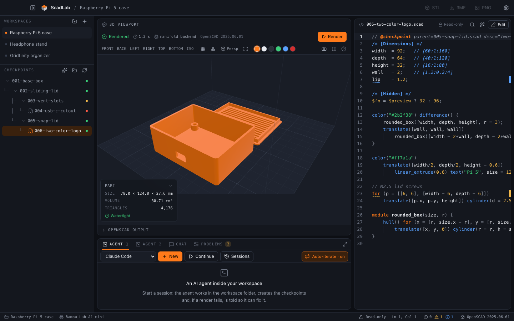
Main window: workspaces and the checkpoint tree on the left, viewer in the middle, code on the right and the AI agent below.
The idea
OpenSCAD describes a model with code: it is precise, parametric and versioned as text. The hard part is
writing it. ScadLab gets an AI agent to write that code for you, and takes care of everything around that
conversation:
Every change is a checkpoint
The AI never overwrites a file: each version is a new .scad in a tree with branches. Going back is one click.
You see it instantly
A 3D viewer with realistic materials, measurements, and the estimated weight and cost of each part.
Errors fix themselves
If OpenSCAD fails to render, ScadLab hands the error to the agent so it fixes it in a new checkpoint.
For your printer, whatever the brand
A catalog of seven brands, printer, colors and skills per workspace, a warning when it does not fit on the plate, and a 3MF with one color per part.
Your agents, not ours
Use the CLI you already have installed —Claude Code, opencode, Codex, Antigravity— or a local model with Ollama.
Local
Your projects are folders on your disk and the settings live in a local SQLite database. No account.
Project status
This help describes version 0.2.0 of ScadLab. Binaries for macOS and Windows
are on Releases (you can also
build it from source). Everything this page documents is implemented and
verified against a real OpenSCAD; nothing is “in development”.
Area
Status in v0.2.0
Workspaces, settings, EN/ES language
Available
OpenSCAD and agent CLI detection
Available
Included skills; your own skills: create, edit, rename, delete and choose their folder
Available
Rendering with OpenSCAD: status, diagnostics, auto-render and RENDER_ERRORS.md
Available
3D viewer: navigation, views, modes, measurements, colors, PNG capture and split view
Available
Code editor: highlighting, find and replace, linter, formatting, autocomplete and save as checkpoint
Available
Window: dockable panels (move, split, float, minimize and hide), saved layouts, focus mode, collapsible sidebar, status bar and Problems panel
Available
Several projects at once: project tabs with background indicators, reordering, shortcuts and reopening on startup
Available
Agent terminal (Claude Code, opencode, Codex, Antigravity) with sessions and auto-iteration on errors
Available
Hermes chat: AI providers with encrypted keys (Ollama, OpenAI-compatible, OpenRouter, Gemini, Anthropic), agent mode with tools, attachments (images and STL/3MF/OBJ models), conversations, tokens and cost
Available
Printers from seven brands: a catalog with datasheets and search, and per workspace the printer, colors, skills and print settings
Available
Export: STL, multicolor 3MF for Bambu and Orca or for PrusaSlicer (one part per color with its extruder), one STL per color and open in the printer's slicer
Available
ScadLab MCP server: agents render, validate, measure and see their models, configured automatically in each CLI
Available
Per-part measurement: selection in the viewer, estimated weight, filament and cost, plate warning and the Print panel
Available
Built-in engine (OpenSCAD on WebAssembly): viewer, STL/3MF export and estimate without OpenSCAD installed, and the Download OpenSCAD button
Available
Advanced checkpoints: context menu, rename, trash, active parent, compare with the parent and resume the session that created them
Available
What is still missing
Not features: it is manual verification, in real windows and programs, that cannot be automated.
Running ScadLab on a real Windows machine: the .exe is built from macOS and has not been run there yet.
The 3D viewer, the editor and tab dragging inside the real window (WebGL in WKWebView / WebView2, Monaco's workers, Ctrl+Tab).
The terminal with a real agent CLI, the chat against a real server and a session of each agent using the MCP tools.
The Download OpenSCAD button on a real Windows machine (the macOS download is tested end to end) and the built-in engine on both systems.
Opening an exported 3MF or STL in each slicer (Bambu Studio, OrcaSlicer, PrusaSlicer, Creality Print…), assigning the filaments and slicing.
ScadLab is free, open source and has no telemetry, and it will stay that way. If it saves you hours of modeling and you
want it to keep growing, you can support it with a one-off contribution on Buy Me a Coffee or with a
monthly subscription on Patreon. Both are also one click away from the app, in the footer of
Settings.
One executable for macOS (Apple Silicon) and another for Windows (x64). The binaries are not
signed yet, so the system warns you the first time you open them.
Version 0.2.0
The files are on
Releases:
ScadLab-v0.2.0.dmg for macOS and ScadLab-v0.2.0-windows-amd64.exe for Windows. You can also
build it from source.
The first time, right-click → Open (not a double-click) and confirm in the dialog.
Gatekeeper
If macOS says the app “is damaged” or “cannot be
verified”, it is because it is not signed or notarized. Go to System Settings → Privacy &
Security and click Open Anyway, or remove the quarantine flag from the
terminal:
Run the .exe: it is portable, no installer needed.
If “Windows protected your PC” appears, click More info → Run anyway.
SmartScreen
The warning appears because the executable is not signed
with a code certificate and has few downloads so far. It is not a virus diagnosis. If you would rather not
accept it, build from source.
ScadLab uses WebView2 (Edge's engine) for its interface. It ships with up-to-date Windows 10 and
11; if it is missing, the app tells you at startup.
Build from source
You need Go, Node.js and the Wails v2 CLI:
go install github.com/wailsapp/wails/v2/cmd/wails@latest
git clone https://github.com/rafael180496/ScadLab.git
cd ScadLab
wails build # binary in build/bin/
After installing
ScadLab does not need OpenSCAD to open: without it, it renders with its built-in engine, and you can download
OpenSCAD from the app itself. Continue with Requirements.
Requirements: OpenSCAD and agents
OpenSCAD is what turns the code into geometry, and ScadLab brings a built-in copy to fall back on,
so the 3D viewer works even if you have not installed it. The AI agents are optional, but they are half the fun.
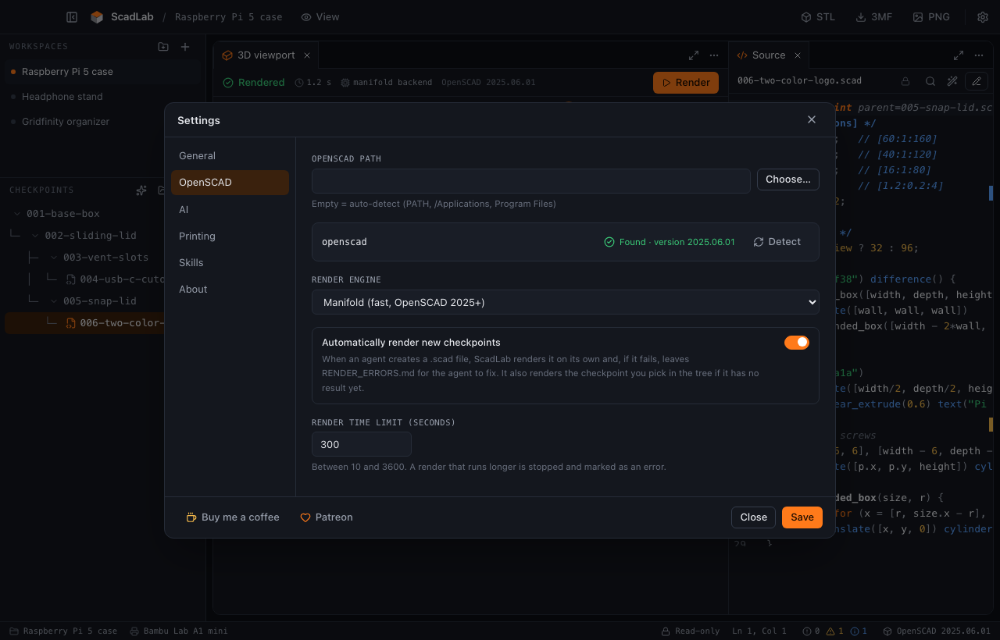
Settings → OpenSCAD: automatic detection, the version found and the render engine.
OpenSCAD
Download it from openscad.org. A recent development
version (snapshot) is recommended over the stable 2021.01: it renders much faster with the Manifold
engine and exports 3MF with color, which is what multicolor needs.
At startup, ScadLab looks for OpenSCAD in the usual locations and in the PATH, and shows the version
it found in Settings. If you installed it somewhere else, enter the path
by hand right there.
No OpenSCAD installed: built-in engine and download Available
If ScadLab does not find OpenSCAD, it does not stop working: it renders with a built-in
engine, the official OpenSCAD 2025.12.30 compiled to WebAssembly. The 3D viewer, the STL and 3MF export (with
one part per color) and the weight and cost estimate work the same; it is only slower. The
render panel says so with an informational notice, and the status bar shows a
WASM 2025.12.30 badge.
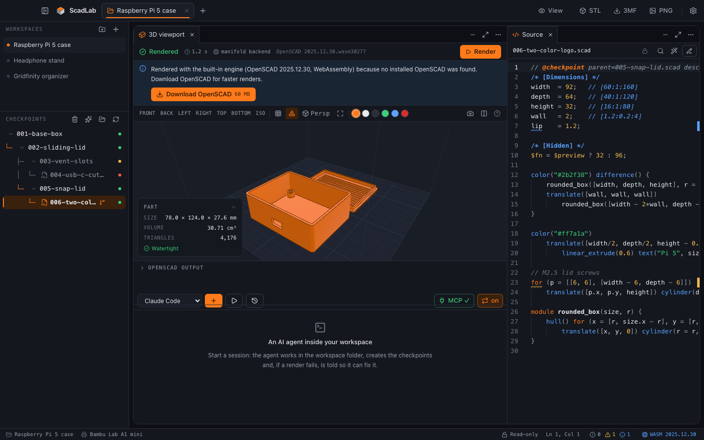
Render with the built-in engine: informational notice with the Download OpenSCAD button, and the WASM badge in the status bar.
To render faster, click Download OpenSCAD (in that notice or in
Settings → OpenSCAD). ScadLab downloads OpenSCAD 2025.12.30 from openscad.org (about 60 MB
on macOS and 40 MB on Windows), checks its SHA-256, and installs it in its own data folder: it does not touch the
rest of your system or ask for administrator permissions. While it runs you see the progress and can
Cancel; a cancelled or failed download leaves nothing behind. When it finishes, the active checkpoint is
rendered again with the real OpenSCAD.
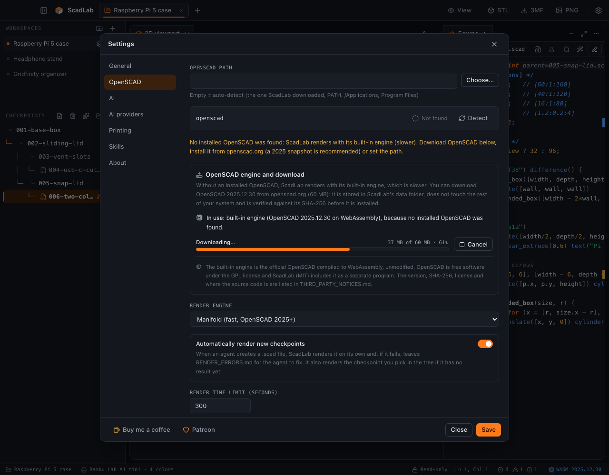
Settings → OpenSCAD: which engine is in use, the download in progress with Cancel and, once installed, Remove download.
Order of search
What is used
1
The path you set in Settings → OpenSCAD
2
The OpenSCAD downloaded by ScadLab
3
The one in your PATH and in the usual install locations
4
The built-in engine (OpenSCAD on WebAssembly)
Remove download deletes only what ScadLab downloaded, never an OpenSCAD you installed. The download
exists for macOS (Apple Silicon and Intel) and Windows (64-bit); on other systems, install OpenSCAD yourself.
License. OpenSCAD is free software under the GPL license. The built-in engine is the official
one, unmodified, and ScadLab (MIT) includes it as a separate program; the version, the SHA-256, the license
and where the source code is are listed in THIRD_PARTY_NOTICES.md. The OpenSCAD you download is not
distributed by ScadLab: it comes straight from openscad.org.
AI agents (optional)
ScadLab does not ship its own model: it uses the CLIs you already have installed and signed in for the
terminal and the chat (they show up in the chat's provider picker on their own), and the model servers you enable for the chat.
It detects any of these:
Agent
What you need
Claude Code
The claude CLI installed and signed in
opencode
The opencode CLI with a provider configured
Codex
The codex CLI signed in
Antigravity
The Antigravity CLI installed
Ollama (chat)
Ollama running locally (by default http://localhost:11434) and a downloaded model
OpenAI-compatible (chat)
A server with that API (LM Studio, vLLM, OpenRouter…) and the environment variable holding its API key
Anthropic (chat)
The environment variable holding your Anthropic API key
Each agent is billed and governed by its own provider's terms; ScadLab only runs it.
Your first project
From an empty folder to a part you can print: create a workspace, ask the agent for
something and look at the result.
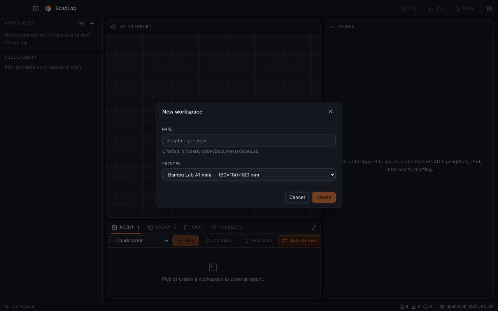
New workspace: name, printer and colors, skills and location. “Will be created in” shows the exact path; the checkbox below makes it the default folder.
1. Create the workspace Available
Click New workspace.
Give it a name (for example Sensor box) and pick the printer; if it is multicolor, say how many colors it uses. The skills come checked for your printer and you can adjust them.
Under Location choose the folder it is created in (Choose…): by default it is the one from
Settings → General, and it is created if it does not exist. Below, Will be created in shows the exact final path
(<location>/sensor-box) as you type the name; if that folder already exists and is not empty, ScadLab leaves it
alone and tells you which one it is.
ScadLab creates the structure and copies only the chosen skills for every CLI.
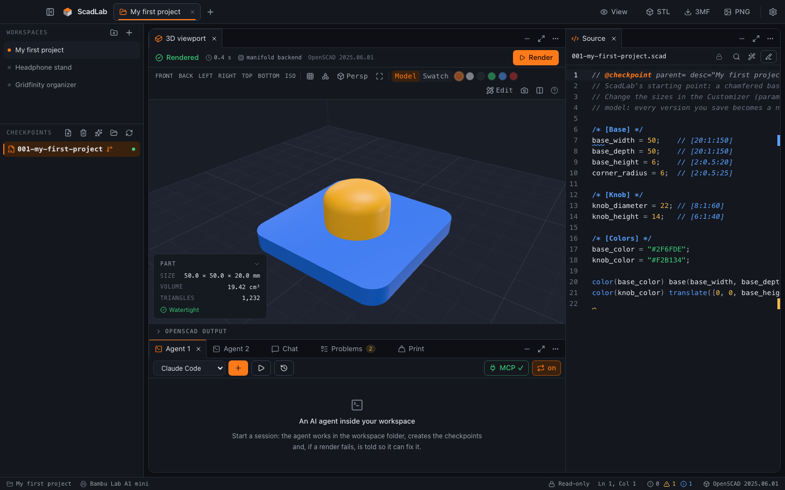
A new workspace already comes with a starter model: there is something to look at and to start from.
The workspace is never opened empty: it comes with 001-<name>.scad, a base with a knob, with Customizer parameters and two colors. A workspace you open that has no
.scad at all (one from before this version, for example) gets it too. If you emptied it —sent its checkpoints to the trash, or emptied the trash afterwards— it does not come back on its own: the viewer and the Code panel show
Create a starter model when the project has no checkpoint, and write it when you ask. It never overwrites anything. Next to it,
Create from an image starts the project from your photos.
2. Ask the agent for the model Available
Open the Agent panel, pick your agent, click New and describe the part with measurements:
Make a 60×40×25 mm box with 2 mm walls and a snap-fit lid with a 0.2 mm
clearance. 4 mm rounded corners. Blue box and white lid. It must fit on the A1 mini.
The agent creates 001-base-box.scad, ScadLab renders it on its own and the checkpoint shows up in the tree;
if it fails, the agent gets the notice to fix it (auto-iteration). A minimal
checkpoint looks like this:
Every new request produces a new checkpoint: “add four 3 mm holes in the base for M3 screws” creates
002-… with parent=001-…. If you do not like it, click the previous one and ask for something
else: that creates a branch.
4. Export
With the checkpoint you like selected, click 3MF in the header and open it in Bambu
Studio. Details in Export.
Workspaces
A workspace is a project: a folder on your disk with the checkpoints, the printer
settings and the rules for the agents.
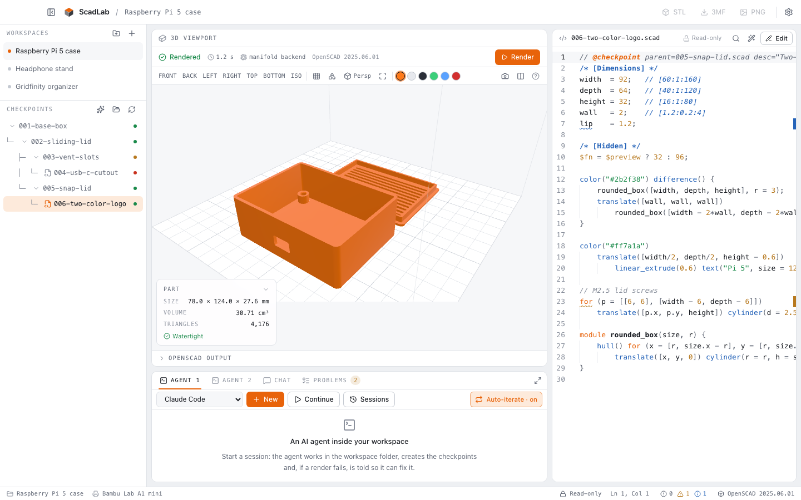
Workspaces on the left (light theme): the open one has the orange dot.
What is inside Available
sensor-box/
├── 001-base-box.scad # checkpoints: one per version
├── 002-m3-holes.scad
├── printer.json # the project's printer
├── CLAUDE.md # rules for Claude Code
├── AGENTS.md # rules for opencode, Codex, Antigravity
├── lib/ # libraries (BOSL2, MCAD…) if you use them
├── .claude/skills/ # skills, copied for each CLI
├── .agents/skills/
├── .opencode/skills/
└── .agent/skills/
It is a regular folder: you can open it with any editor, version it with Git or copy it to another machine.
ScadLab recognizes it when you open it again.
Create, open and recents Available
New workspace: name, printer and colors, skills and location (the folder that will hold it; the workspace ends up in
<location>/<lowercase-hyphenated-name>). Use this folder as the default makes the next ones
start there. A destination folder that already exists and has files in it is refused without touching it.
Open: choose an existing folder; ScadLab fills in whatever is missing (skills, rules) without touching your .scad files.
A first .scad out of the box: a new workspace —and a folder you open that has no .scad at all— starts with a valid
001-<name>.scad (checkpoint header, $fn, Customizer parameters and a color() part that renders), already selected. If the folder already had
.scad files, nothing is added or touched.
You can have up to 4 projects open at once, each in its own tab, in the header, to the
right of the logo. It is a single window: no new system windows are opened.
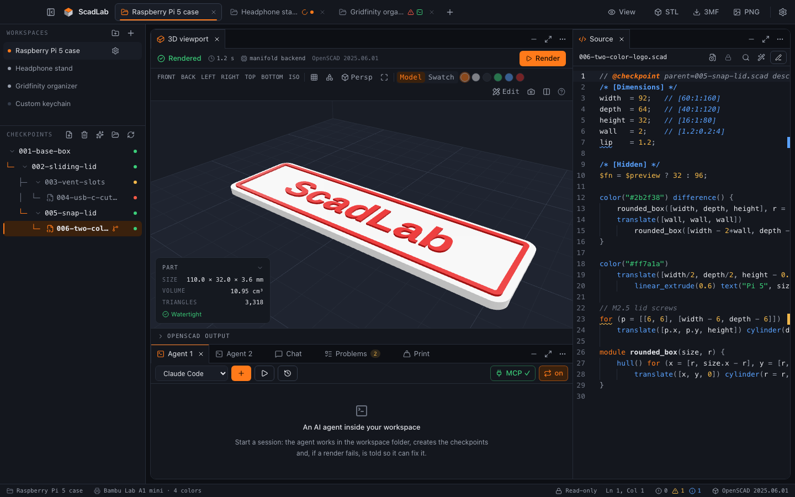
Three open projects. The active one is underlined; the background ones show what is going on in them: render in progress, last render failed, agent running and unsaved changes.
Open another: the + button in the header lists your workspaces (the ones already open carry a mark and take you to their tab) and offers New workspace…. Clicking a workspace in the sidebar also opens it as a tab. With 4 open the + is disabled, and its hint tells you to close one.
Switching tabs is instant and loses nothing: each project keeps its selected checkpoint, its unsaved code (and whether you were editing), the open comparison with the parent, the part selected in the viewer and the chat you had. The sidebar, the viewer, the code, Problems, Print and the chat follow the project in front.
Background ones keep working: their folder is still watched, auto-render keeps responding to whatever an agent writes, and their agents and auto-iteration keep running. The Agent 1 and Agent 2 panels show the terminals of the active project (up to 2 per project, 8 in total); the other projects' terminals stay alive, with their screen intact, until you go back to them.
Reorder: drag a tab, or use its menu (right-click): Move left / Move right, Close, Close the others and Show in Finder (in Windows, in Explorer).
Close with the × or the shortcut: if the project has unsaved changes or running agents, ScadLab tells you what will be lost before closing (the agents are stopped). Closing the last one leaves an empty screen.
When ScadLab opens, it reopens the tabs you had and the one that was in front.
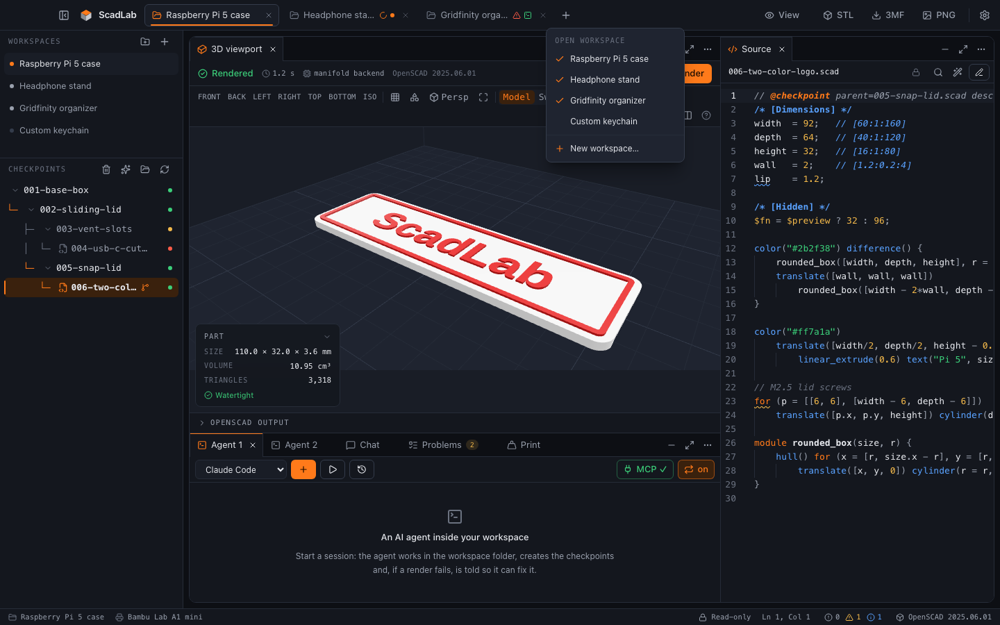
The + menu: workspaces that are already open carry a mark; the rest open in a new tab.
In narrow windows (or with a larger interface) the tabs shorten with an ellipsis and keep only the most
important indicator; they never push the export buttons out of the window. Hover over a tab
to see the full name and its folder.
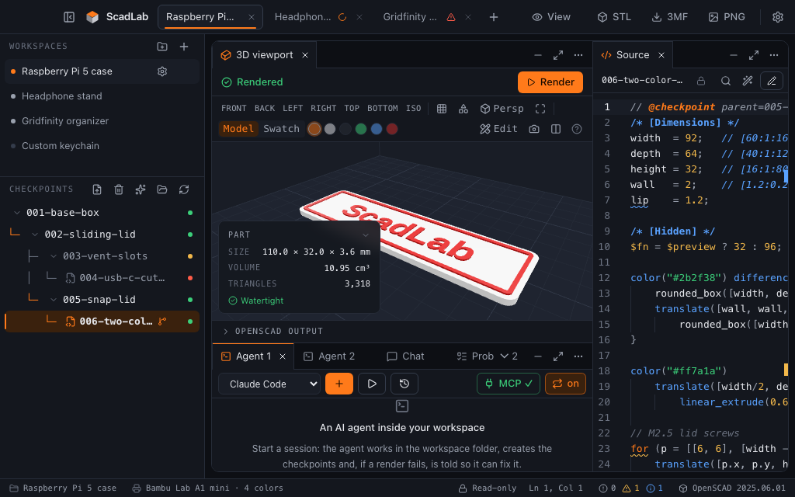
At 1024 px the tabs shorten; the header does not overflow.
Project tab shortcuts
macOS
Windows
What it does
⌃Tab / ⌃⇧Tab
Ctrl+Tab / Ctrl+Shift+Tab
Next / previous project tab
⌘1 … ⌘4
Ctrl+1 … 4
Go to tab 1, 2, 3 or 4
⌘W
Ctrl+W
Close the active project (with confirmation if something would be lost). In Windows, with the focus in an agent terminal, Ctrl+W belongs to the shell (delete word): use Ctrl+Shift+W there
They do not clash with the other shortcuts: the dock uses ⌘⇧1…7, the viewer uses 1–7 with no modifier, and
the editor and the terminal do not use these combinations. They do nothing while a dialog is open.
Each agent sees the other open projects
When you open an agent from ScadLab, the folders of the other projects open at that
moment are added to it (--add-dir in Claude Code, Codex and Antigravity), and its rules tell it that it can read them to
reuse parts but only writes in its own. Two caveats:
opencode has no equivalent option: it only sees its own project's folder.
The folders are fixed when the agent is opened: if you open another project afterwards, an agent that was already open does not find out. Click New in its terminal to relaunch it with the current list.
What ScadLab remembers when you quit Available
When you open the app again everything is as you left it, with nothing to save by hand:
Projects and checkpoint: the open tabs, which one was in front and, in each project, the checkpoint you had
selected (not the newest one; if that file no longer exists, the latest one is opened).
Panels: the layout (splits, floating or hidden panels), which tab was active in each group, the maximized panel and
the minimized groups. Focus mode is not remembered: ScadLab always opens with your panels.
Window: the sidebar width, whether it was hidden, and the status bar.
3D viewer: wireframe, edges, orthographic or perspective projection, split view, the chosen color swatch and whether
the part is painted with the model's own colors, and the collapsed measurements. Not the camera: each part is framed on its own.
Appearance: theme, interface size and the editor, terminal and chat fonts.
Skills sync Available
When you create or open a workspace, ScadLab copies the included skills and your own into the four locations
the CLIs read. That way it does not matter which agent you use: they all follow the same rules. See
Included skills.
Checkpoints: the history Available
Every version of the model is an immutable .scad file. The history is not in a
database: it is rebuilt by reading the files.
Checkpoint tree: 005-snap-lid is a branch that comes off 002-sliding-lid. Each node's dot is its render status.
The format
Name: NNN-slug.scad — a three-digit number (the one after the highest that exists)
and a short kebab-case slug: 001-base-box.scad, 002-rounded-corners.scad.
First line, always:
// @checkpoint parent=002-rounded-corners.scad desc="Adds a side hinge"
In the first checkpoint parent= is empty. desc says what changes from the parent, in
one sentence and with no double quotes inside.
Why they are immutable
The AI never overwrites a checkpoint, not even one with an error: the fix goes in a new
one. That way any version you have seen still exists exactly as it was, and comparing or going back does not
depend on anyone having saved anything. Each checkpoint is self-contained (it copies all the
parent's code): it does not include another checkpoint.
Loading a checkpoint
One click in the tree selects it and, if it was never rendered and auto-render is on, renders it. The
meshes are kept in a disk cache, so going back to a version you already saw does not recompute
anything. See Rendering and diagnostics.
The description
When you hover over a checkpoint, the tooltip shows its desc (the quick way to know what
changed without opening the code), the file, who created it —the agent and the session, or “Saved from the
chat”— and when.
What ScadLab stores next to the checkpoints
The workspace's .scadlab/ folder holds two things that are not models: the
trash and the active parent
(.scadlab/active-parent, one line with a file name). Labels, folding and the link to
the agent's session live in the local database scadlab.db: if you lose it, the tree is rebuilt anyway
by reading the files and only those details go. Neither touches your .scad files.
Tree, branches and menu Available
The history is a tree, not a list: you can go back to any point and try another idea without
losing the previous one. Right-click a checkpoint (or click “…” when hovering) for everything that follows.
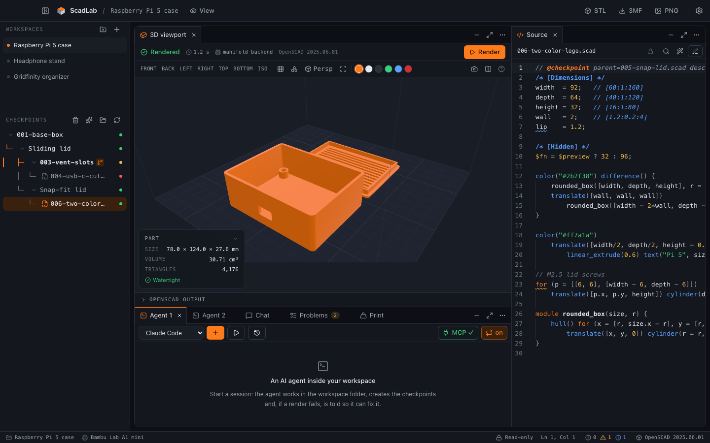
The active parent (003-vent-slots) carries the branch icon; the connectors of the branch down to it are in the accent color.
Branching and the active parent
The active parent is the checkpoint the next one created hangs from, whether it is made by the agent in
the terminal, the chat, the MCP server or you when saving from the editor. It is marked in the tree with a branch icon.
To branch, right-click the checkpoint you want to start from and choose Branch from here:
the agent reads it from .scadlab/active-parent (the workspace rules say so) and the
create_checkpoint tool uses it by default.
It advances on its own. When a child of the active one is created, the new one becomes the active one: you
keep working on the same branch without marking it again. A variant that comes off another parent does not move the active one.
With no active parent, the usual rule applies: the next one hangs from the newest checkpoint, and the tree marks
that one.
If you send the active one to the trash, the active one becomes its parent.
001-base-box
├── 002-rounded-corners
│ ├── 003-snap-lid # active parent: the next one hangs from here
│ └── 005-alt-screw-lid # parent=002: new branch
└── 004-tall-version # parent=001
Context menu
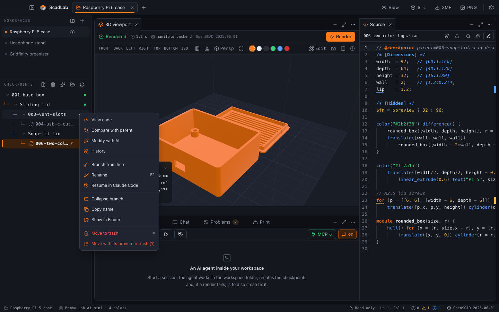
The menu of a checkpoint created by Claude Code: “Resume in Claude Code” only appears when there is a link.
Action
What it does
View code
Selects the checkpoint and opens its code in the Source panel
Compare with parent
Shows in the Source panel what changed from the parent. Disabled on a root
Reopens the conversation it was created in: “Resume in Claude Code” (or whichever agent) or “Open the chat”
Collapse / expand branch
Hides or shows the checkpoints that hang from this one
Copy name
Copies the file name to the clipboard
Show in Finder / Explorer
Opens the workspace folder with the file selected
Move to trash ⌫
Takes only that checkpoint out of the tree. Its children hang from its parent instead (or become roots if it was a root); the confirmation says so
Make root
Only on a checkpoint marked with ⚠ (its parent is gone): makes it a root, with no parent
Move with its branch to trash
Takes the checkpoint and all its descendants. The confirmation says how many there are
Rename
Renaming changes the label: the name shown in the tree, up to 80 characters. The file does not
get renamed, because its children name it in their parent= and a checkpoint is immutable. Enter saves, Esc
cancels, and leaving it empty shows the file name again.
The trash
Sending a checkpoint to the trash does not delete it: it moves to the workspace's .scadlab/trash/,
with the date in front of the name. The trash icon in the tree header shows how many there are and opens the list,
with each one's description, when it was discarded and the Restore button. Deleting for real is a separate decision,
and only yours: see below.
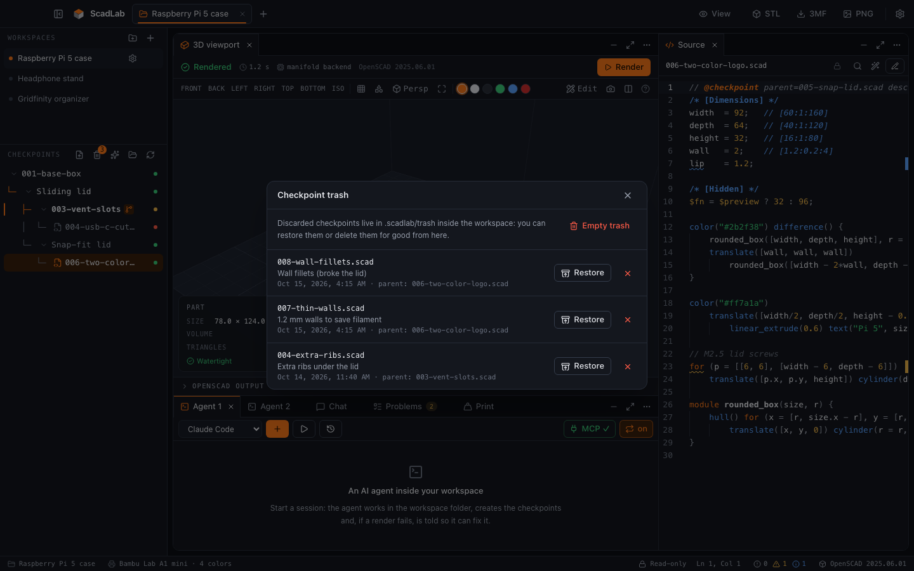
The trash: restoring puts the file (and its label and its link to the session) back in the tree.
Restoring puts the checkpoint back under its name; if that number is already taken by another, it takes the next free one with the same
slug. The file itself is not rewritten.
Its children are not left orphaned. When you send it to the trash, its direct children hang from its parent
—the “grandparent”— or, if it was a root, become roots. Only the // @checkpoint parent=… line of each child changes:
the code, the description and the file date are untouched, and grandchildren keep hanging from their own parent.
Restoring undoes it: children that are still where they were left hang from the restored one again (under the name
it came back with); one you already moved to another branch is left alone. If you send the whole branch to the trash,
there is nothing to re-hang.
If it was the active parent, the active one becomes its parent.
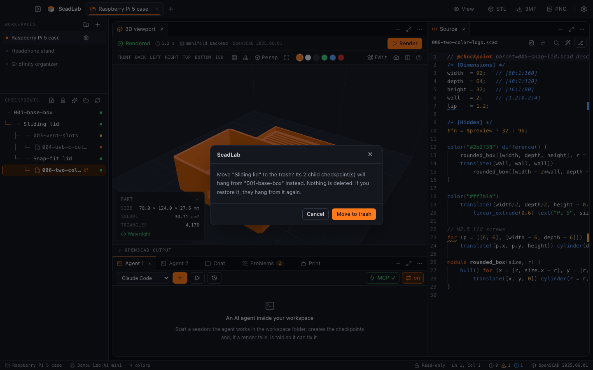
The confirmation says what happens to the children before anything moves.
A child whose parent is gone: “Make root”
A workspace that already had children whose parent is in the trash (from an earlier ScadLab version), or a parent deleted by hand,
shows them with ⚠ in the tree, and the Problems panel warns SL002. If the parent is in the trash the warning says
so: you can restore it from the trash or press Make root —on the warning, or by right-clicking the checkpoint—,
which leaves it with no parent by rewriting only its header line.
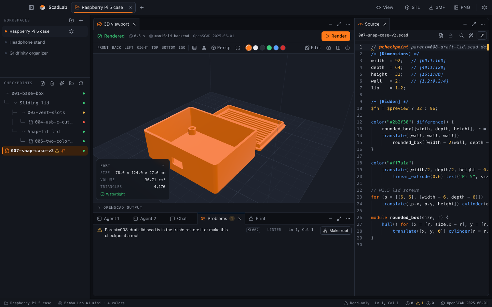
The warning for a parent in the trash, with its one-click fix.
Delete for good and empty the trash
The trash window has two buttons that do delete, and they ask for confirmation naming what goes and
saying it cannot be undone:
✕ on each row: deletes that checkpoint for good.
Empty trash: deletes everything in that workspace's .scadlab/trash/ —the checkpoints and any other file someone left there—. Emptying it does not bring the starter model back when you reopen a workspace left with no models: you left it empty on purpose, and the “Create a starter model” button is still there.
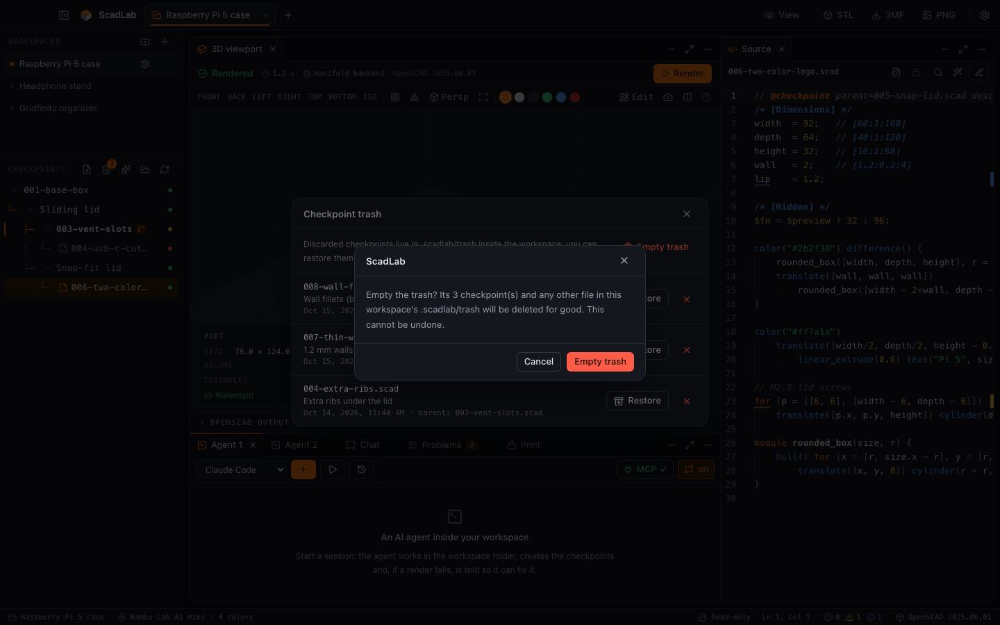
Emptying the trash: confirmation with the count and the warning that it cannot be undone.
This is interface-only: the AI can send to the trash and restore, but none of its tools deletes for good or empties
the trash. (The skills trash is a different one and has no such button.)
Compare with the parent
The Source panel turns into a read-only diff viewer: the parent on the left, the
checkpoint on the right, with what was added and removed highlighted and the rest folded. In a narrow panel it is shown in a single
column; the bar button switches it by hand. Back to code (or choosing another checkpoint) closes it.
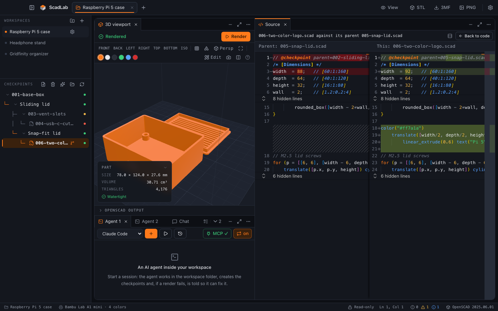
Comparing 006 with its parent: the width changes from 88 to 92 and the logo block appears.
Resume the session that created it
When a new checkpoint appears and there is an agent terminal open in that workspace, ScadLab stores which
agent and which session created it (that agent's most recent one for the folder). The ones you save from the chat
remember the chat. Afterwards, Resume session opens the agent in the terminal with that conversation
(--resume) or opens the chat. What you save yourself from the editor is not attributed to the agent, and Antigravity, which
does not list its sessions, cannot be resumed by id.
Folding and connectors
Each branch can be folded so the tree does not grow endlessly. The connector lines draw who comes
from whom even when the numbering jumps.
With the keyboard
With the focus on a checkpoint in the tree: ↑↓ move, ←→ fold and
unfold, Enter selects it, F2 renames it, ⌫ / Del sends it to the trash
(with confirmation) and the menu key or Shift+F10 opens the menu. These keys belong to the tree: with the focus in the
editor or the terminal they do nothing. See Keyboard shortcuts.
Rendering and diagnostics Available
ScadLab runs OpenSCAD on each checkpoint and tells you how it went: how long it took, whether the mesh
came from the cache and, if it failed, what error it gave and on which line.
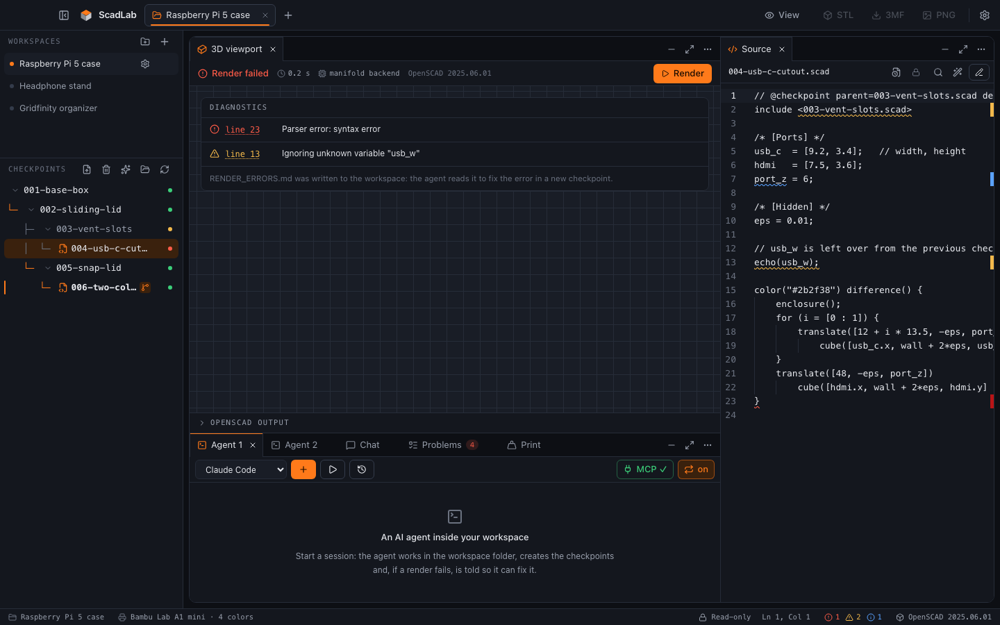
Failed render: diagnostics with their line (click = jump to that line in the code) and the RENDER_ERRORS.md notice for the agent. In the tree, the red dot marks the broken checkpoint.
Render and cancel
Choose a checkpoint and click Render in the viewer panel. While it runs, the button turns into
Cancel. There is only one render at a time per workspace: if you choose another checkpoint and render it,
the previous one is cancelled. If the render succeeds, the part appears in the 3D viewer
below the status bar; if it fails, the panel shows the diagnostics.
The status bar
Item
What it means
Duration
How long OpenSCAD took, in seconds
From cache
The mesh was not recomputed: the code and its include/use files did not change since last time. Going back to an already rendered checkpoint is immediate, even after restarting the app
Backend
manifold or cgal. If your OpenSCAD is old and does not know Manifold, ScadLab falls back to CGAL on its own
Version
The OpenSCAD version that did the render
Status in the tree
Indicator
Status
Spinner
Rendering
Green dot
Succeeded
Amber dot
Succeeded, but with warnings (an undefined variable, an include that was not found…)
Red dot
Failed
No dot
Not rendered yet
Hovering over the indicator shows the summary: the duration, how many warnings there were or the first
error with its line.
Diagnostics and OpenSCAD output
If the render has errors or warnings, the panel lists them with their severity, the line and the
message (and the file, if the error is in an include). A model that produces nothing —for example,
everything inside a difference() that is subtracted away entirely— also counts as an error. Below,
OpenSCAD output expands the full text OpenSCAD printed, which can be selected and
copied.
Auto-render
ScadLab watches the open workspace's folder. When a new .scad appears —for example, because
an agent created it from the terminal— the tree updates on its own and, with auto-render on, that checkpoint is
rendered without you touching anything. If several arrive at once, the one with the highest number is rendered. Selecting in the tree
a checkpoint that was never rendered also renders it. Turn it off in
Settings → OpenSCAD.
RENDER_ERRORS.md
When a render fails, ScadLab writes RENDER_ERRORS.md at the workspace root: the file, the
errors with their line, the code around each one, the warnings and the instruction to fix it in a
new checkpoint whose parent is the one that failed. The workspace rules tell the agent to
read it. When a render succeeds, the file is deleted; a cancelled one, or one without OpenSCAD, does not touch it.
The file always describes the newest checkpoint, which is the one the agent is working on.
Rendering an old one while you browse the history neither writes nor deletes it: opening an already superseded broken checkpoint
does not send the agent errors it already fixed, and opening an old one that works does not hide that the latest
is broken. See
Auto-iteration on errors.
If OpenSCAD is missing
It does not stop you: ScadLab renders with its built-in engine and the panel shows an informational
notice (not an error) with the version and the reason, and the Download OpenSCAD button with its progress and
Cancel. The status bar shows WASM 2025.12.30. Only if the built-in engine cannot start either does the panel
report that nothing can be rendered, with the download button and another that opens
Settings on the OpenSCAD tab, where you can enter the executable's path. If you install it
while the app is open, the next render finds it. See
No OpenSCAD installed.
Navigating the model Available
When a render succeeds, the viewer shows the part with PBR materials and environment reflections
on your printer's plate, to scale, so you see it as it will be printed and not as a flat mesh.
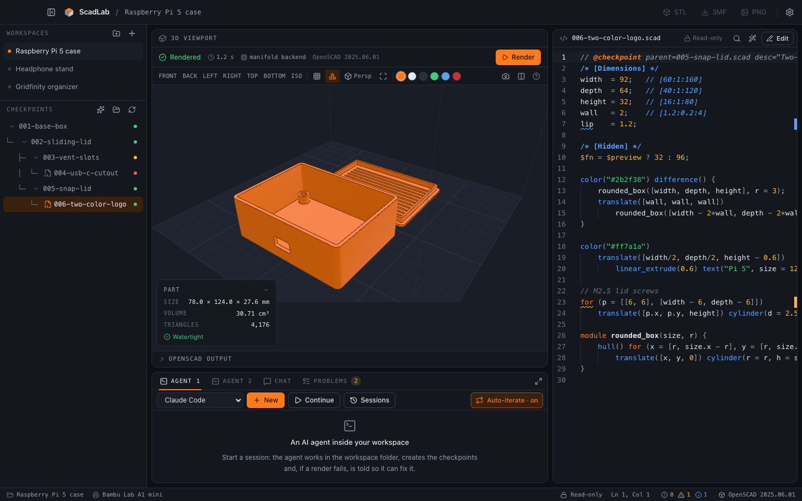
The part resting on the workspace printer's plate, with its edges outlined. At the top, the viewer bar; at the bottom left, its measurements.
The plate
The plate is the workspace printer's, at real scale: a 10 mm grid (stronger every
50 mm) and the build-volume box in faint lines. The part rests on the plate and is centered
on it, as the slicer would do. The viewer uses Z up, like OpenSCAD.
Mouse and trackpad
Gesture
Action
Drag with the left button
Orbit around the model
Drag with the right button, or Shift + drag
Pan
Wheel, or pinch on the trackpad
Zoom
Touch
One finger orbits; with two, pinching zooms and dragging pans.
Keyboard
Click the viewer to give it focus. The arrows orbit, Shift+arrows pan,
+ / − zoom, 1–7 choose the views
and F frames the part. The ? button on the viewer bar reminds you of all the controls.
Full list in Keyboard shortcuts.
Switching checkpoints
When you choose another checkpoint the camera stays where it was: that is how you compare two versions from the same
angle. While the new mesh arrives the previous one stays in view, and going back to one already seen is instant
(the meshes stay in memory). If the checkpoint's render fails, the viewer is hidden and the panel shows the
diagnostics; the warnings of a render that succeeded stay folded in
a corner of the viewer.
View modes and cameras Available
Wireframe, edges, orthographic or perspective projection and seven preset views, all
from the viewer bar.
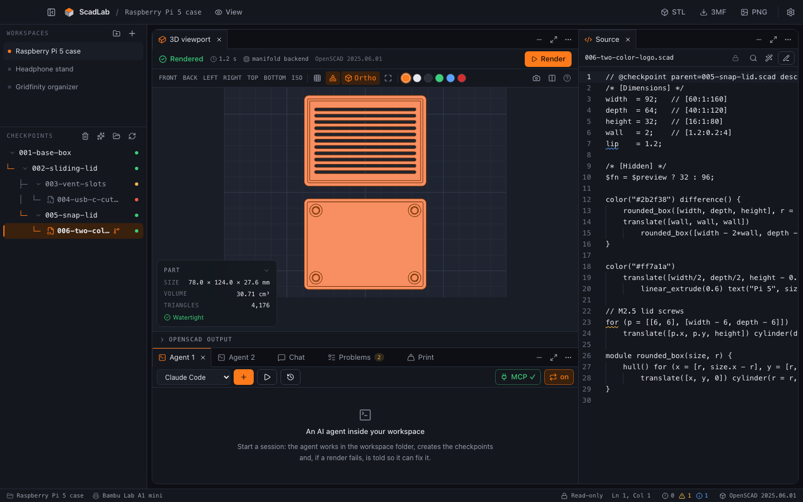
Top view in orthographic: no distortion from distance, the slots and the standoffs show in their real position.
Render modes
Solid (default): PBR materials with reflections.
Wireframe (W): just the mesh, useful to see the triangle density (an $fn that is too high).
Edges (E): solid with the edges over 30° outlined, to read the shape of single-color parts.
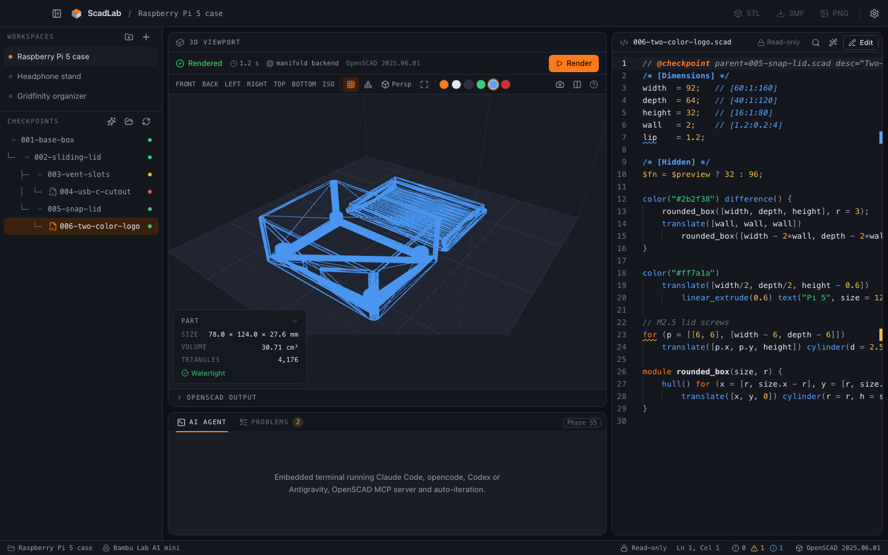
Wireframe: the triangles of the STL mesh. The standoff cylinders concentrate most of them.
Orthographic or perspective
The Persp / Ortho button (O) switches the projection without moving the view.
Orthographic does not distort with distance: it is the one to use to compare measurements or align parts looking
straight on. Perspective is the natural one to see the whole.
The seven views
Front 1
Back 2
Left 3
Right 4
Top 5
Bottom 6
Iso 7
Each view looks at the part from that side and frames it. Bottom is the one people forget and the one that
matters most for printing: it shows the face that will rest on the plate (from below the plate is hidden so it does not
cover it). Frame (F) recenters the part without changing the angle.
Measuring a part: volume, weight and cost Available
The viewer understands the model by parts: each color is a part. Click one and
you see its size, its volume and how much it weighs, how much filament it takes and how much it costs to print. If the part does not fit on the
plate, it tells you before you find out in the slicer.
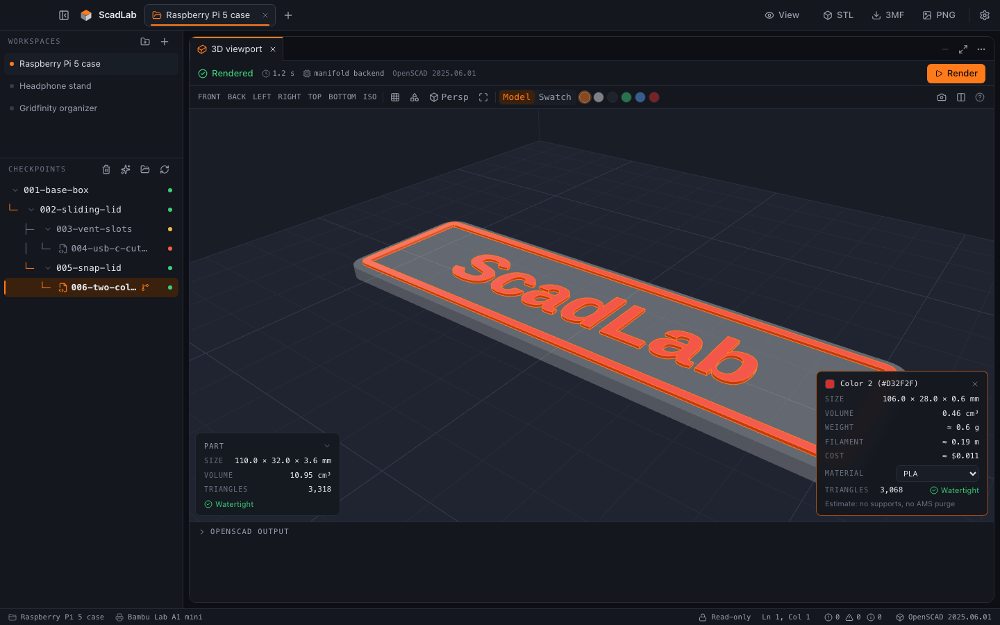
A selected part: it is highlighted, the rest is dimmed and the card at the bottom right gives its measurements and its estimate.
The part panel
The bottom-left corner measures the whole model:
Item
Where it comes from
Size X × Y × Z
The mesh's bounding box, in mm
Volume
The mesh's solid volume, in cm³
Triangles
How many the STL mesh has. A lot usually means an $fn that is too high
Watertight / Open
Whether the mesh is watertight (every edge is shared by exactly two faces). An open one may slice badly
Parts and selection
Each color() in the .scad is a part (that is why the skills make the AI color everything; a
model without color is a single part). A click selects it: it is highlighted with its outline and the rest
is dimmed. Esc or a click on empty space deselects. A drag to orbit never selects by accident, and the
split view keeps the selection.
The part card shows:
Item
What it is
Color, size, volume, triangles and Watertight / Open
The same as the part panel, but for that part alone
Weight ≈
Estimated grams with the part's material
Filament ≈
Meters of filament it uses, for the configured diameter
Cost ≈
Weight × the material's cost per kg, in your currency
Material
Per-part selector: it changes its density and its cost, and the estimate is recalculated instantly
The Model / Swatch switch on the viewer bar decides what the part is painted with: Model uses the color
each color() gave it; Swatch paints everything with the color you pick among the six swatches (picking a swatch
switches to this mode on its own). A model without color() is always painted with the swatch.
The weight, filament and cost numbers are estimates; the formula, explained simply, is in
Cost estimate, and the full table of all the parts is in the Print panel.
Warning: does not fit on the plate
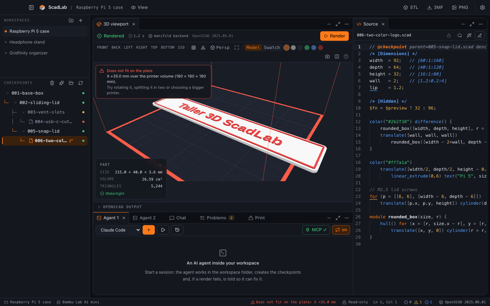
A 215 mm plate on an A1 mini (180 mm): red outline, a notice with what is over and the same notice in the status bar.
ScadLab compares the model's box with the build volume of the workspace's printer. If it
does not fit, the bed outline is drawn in red and a notice says how many mm are over on each axis and what to
try: rotating the part, splitting it in two or choosing a bigger printer. The notice also appears in the status
bar, and a click on it opens the Print panel.
Colors, capture and split view Available
Try colors, save an image of the model and look at two angles at once.
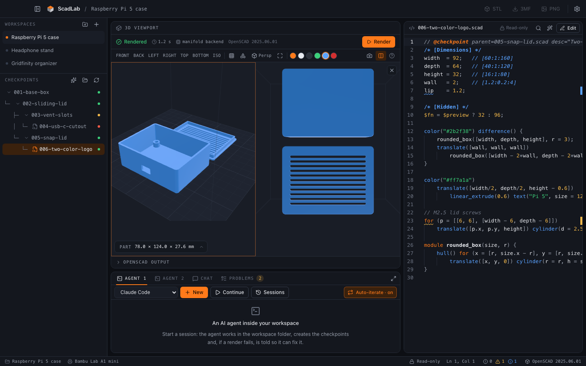
Split view: Iso on the left and Bottom on the right, painted with the blue swatch. The orange frame marks the active view.
Six color swatches
The viewer bar has 6 swatches —meant as the filaments you have loaded in the
AMS—. A click paints the part that color; double-click or right-click opens the
picker to change the swatch, and the palette is saved. The color is only the viewer's: for it to end up in the
model (and in the 3MF), ask the agent: “change the lid to orange”.
PNG capture
The camera button on the viewer bar saves the active view exactly as you see it —angle, mode and color—
to a PNG: ScadLab asks where to save it. Handy to document variants or share them before printing.
Split view
It splits the viewer in two with a second independent camera on the same part: for example
Iso on the left and Bottom on the right, to see the shape and the resting face at once. Click one of the
two to activate it (it gets an orange frame): the bar and the keyboard act on the active one, and each has its
own projection. The × on the right closes it.
Edit an STL Available
Bring in an STL, 3MF or OBJ model, move it, cut it and add pieces or holes —by hand or by asking the AI— without ever touching the original file.
The file is never touched: every edit is a checkpoint
The STL stays intact in the workspace's refs/ folder. Every change is OpenSCAD code in a new
checkpoint that does import("refs/part.stl") and applies the operations to it. That is why an edit
sits in the tree with its parent, is undone by going back to the previous checkpoint, is rendered
with OpenSCAD or the built-in engine and can be exported to STL or 3MF like any other.
Import a model Available
There are two ways: the Import STL/3MF/OBJ… button in the sidebar (next to the checkpoint buttons) or
dragging the file onto the window. Before bringing it in, a dialog analyzes the file and shows its size,
triangles, volume, whether the mesh is closed and, for a 3MF, its colors. It also warns about what matters
for editing: an open mesh, one with more than 500,000 triangles, a 3MF with several colors (it is flattened into one mesh
and loses them) or a part that does not fit your printer's plate.
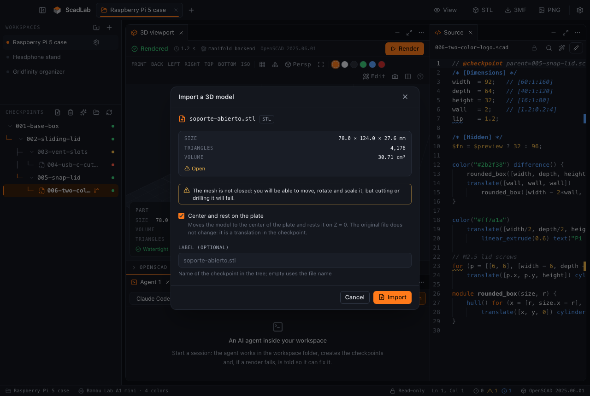
The import dialog: measurements, the open mesh warning and "Center and rest on the plate", ticked by default.
"Center and rest on the plate" (ticked by default) adds a translate() to the base checkpoint: the model ends
up in the middle of the plate resting on Z = 0, and the original file does not change. A 3MF or OBJ is converted to STL in
refs/ (the original stays next to it). After importing, the new checkpoint is a root of the tree and
is selected.
Edit mode
The Edit button on the viewer bar opens edit mode on the chosen checkpoint, whether it is an import or a
design of yours (for a design, its already rendered mesh is frozen; the colors of a multicolor checkpoint are
lost in that base, and you recolor per piece). The preview is immediate.
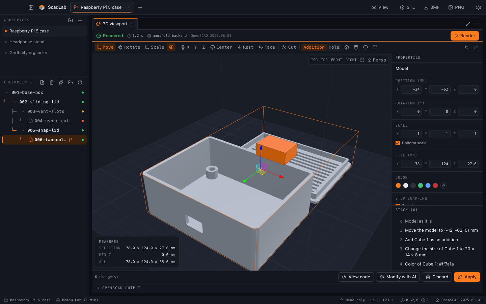
Edit mode: the Move gizmo on the model, its live measures and, on the right, the properties and the operation stack.
Move, Rotate and Scale (W, E, R): drag the gizmo's arrows or rings or type the values
in mm and degrees in Properties. The center cube of Scale scales evenly; the arrows scale per axis. The gizmo
works on the center of the model's box, not on the file's origin (which in an STL is often far from the part).
Step snapping (the magnet): 1 mm, 15° and 0.1 by default; change them in Properties.
Live measures: the box of the selection and of the whole set, and the height of the lowest point.
Mirror on X, Y or Z (along the file's axes; the center of the box does not move),
Center on the plate, Rest on the plate (the lowest point goes to Z = 0) and
Face: click a face of the model and it turns until that face lies against the plate.
Color of the model and of every piece you add.
Cut with a plane
The Cut button creates a plane through the center of the model, with its own gizmo to move and tilt it (or with the
point and the normal typed in, with Horizontal, Vertical X and Vertical Y shortcuts). The plane's arrow marks the "above"
side. You choose what stays: the upper part, the lower part or Split in two, and then the two halves
as objects apart in X (to print them separately) or as colors in place (for a multicolor 3MF),
with a color picker per half.
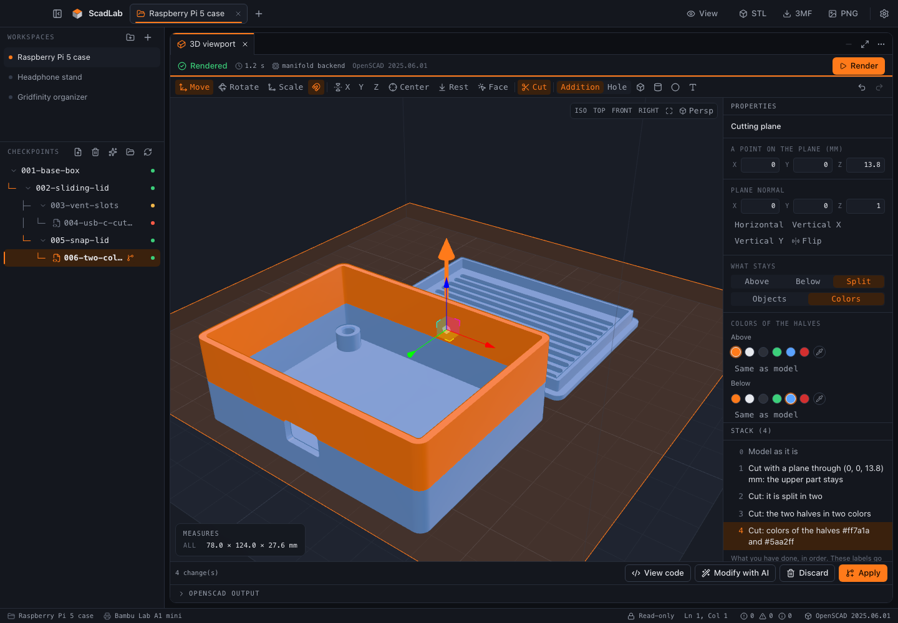
A cutting plane that splits the box into two colors: the preview clips what you see without touching the mesh.
Cube, cylinder, sphere and text: addition or hole
With Addition or Hole chosen, the cube, cylinder, sphere and text buttons add a piece at the center of the
model. Each one has its gizmo, its size (X·Y·Z, diameter and height, letter size and extrusion), its color and its mode,
which you can change afterwards. A hole is subtracted from everything it touches and is shown in the view as a
translucent red volume: it is a preview; the real result is the render when you apply.
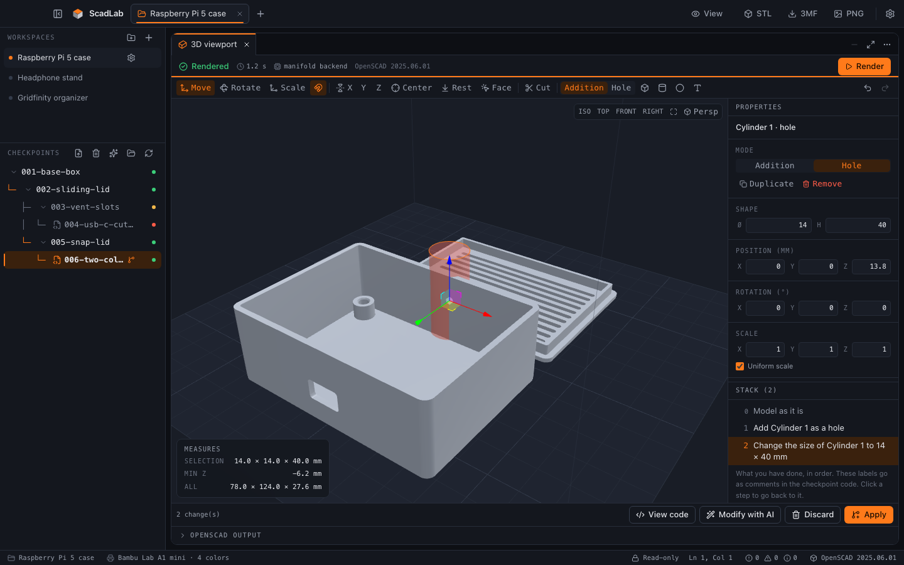
A cylinder as a hole, in translucent red, with its diameter and height.
The operation stack and undo
Everything you do lands on the stack with a readable label ("Move the model to (−24, −62, 0) mm",
"Add Cylinder 1 as a hole"…): those labels go as comments in the checkpoint code. Several consecutive moves of the same
object merge into one. ⌘Z and ⇧⌘Z (Ctrl+Z and Ctrl+Shift+Z on Windows) undo and redo, and a
click on a step goes back to it; struck-through steps can be redone. The shortcuts only act with focus inside Edit
mode, so they do not clash with the code editor's.
View code, Apply and Discard
View code shows the OpenSCAD that would be saved, writing nothing. Apply asks for an optional label and
creates the new checkpoint, a child of the one you were editing, and selects it so it renders. Discard (or
Esc) leaves without keeping anything, with a confirmation if you have made changes; changing checkpoint or closing the project
with an edit half-done asks too. Edit mode is not remembered when you close the app.
Open meshes
A mesh that is not closed can be moved, rotated, scaled and mirrored, but cutting or drilling it fails in
OpenSCAD ("mesh is not closed"). The viewer shows a notice while you edit and, if the edit cuts or drills, ScadLab asks before
applying. The simplest fix is to repair the mesh before bringing it in.
Modify with AI
In a checkpoint's menu (right-click) and on the Edit-mode bar, Modify with AI opens the chat with the model
already attached —with its report and preview— and "Modify this model: " typed in the message box, for you to finish the
sentence. Whichever provider you have chosen answers, Hermes or a CLI, using the
import_mesh tool and the openscad-stl-editing skill. What you have not applied in Edit mode does not travel: the
model is attached as it is saved.
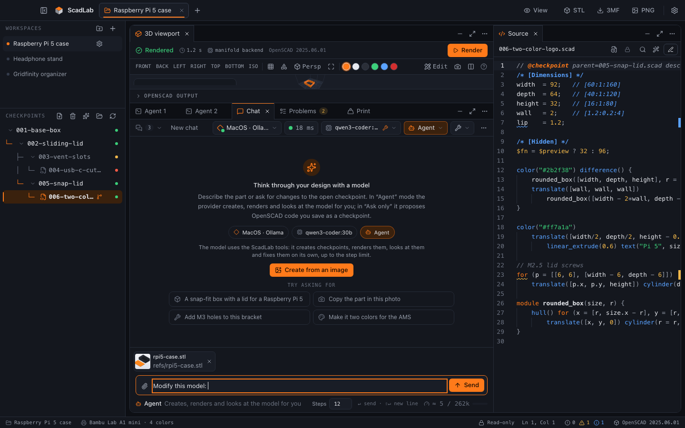
Modify with AI: the chat opens with the STL attached and a suggested text.
In a narrow panel
The toolbar becomes icon-only and wraps onto several lines, the side panel turns into a drawer with tabs (Properties and
Stack) under the viewer and the measures shrink to that of the selection: nothing is cut off and there is no horizontal scrolling.
The code editor Available
Monaco —VS Code's editor, bundled in the app, no internet needed— with OpenSCAD highlighting,
find and replace, automatic formatting, autocomplete with each module's documentation and a linter that
checks the code as you type. Saving never touches the checkpoint: it creates a new one.
Read-only code. The linter underlines in amber the part without color() (line 23) and in blue the parameter without a range (line 7); the status bar counts the problems.
Read-only and edit mode
A checkpoint is immutable, so the code opens read-only (the padlock in the panel header and in the status bar says so). Click Edit or double-click
the code to switch to editing. While you edit, the tree does not change: the checkpoint remains what it was until
you save. Discard (the curved arrow) goes back to the saved code; if you switch checkpoint or
workspace with unsaved changes, ScadLab asks before losing them.
Save = new checkpoint
⌘S / Ctrl+S (or Save) opens a short dialog: the label gives
the file name (007-lid-screws.scad; ScadLab assigns the number) and the
description goes into the @checkpoint header. The new file is a child of the one you were
viewing, appears in the tree, opens and —with auto-render on— renders on its own. Just as if the AI had
done it.
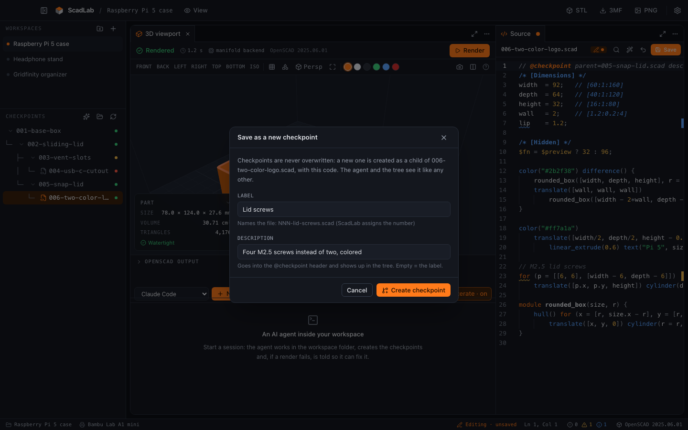
Saving from the editor: label, resulting file name and description of the child checkpoint.
Autocomplete and help for each module
As you type, OpenSCAD's modules, functions, keywords and special variables ($fn, $fa…) appear
with their signature and an explanation in your language. Choosing one opens the parenthesis with the first parameter highlighted,
and the signature help shows the rest while you type the arguments (named ones too:
r = 3 highlights r). Hovering over a built-in module shows the same help.
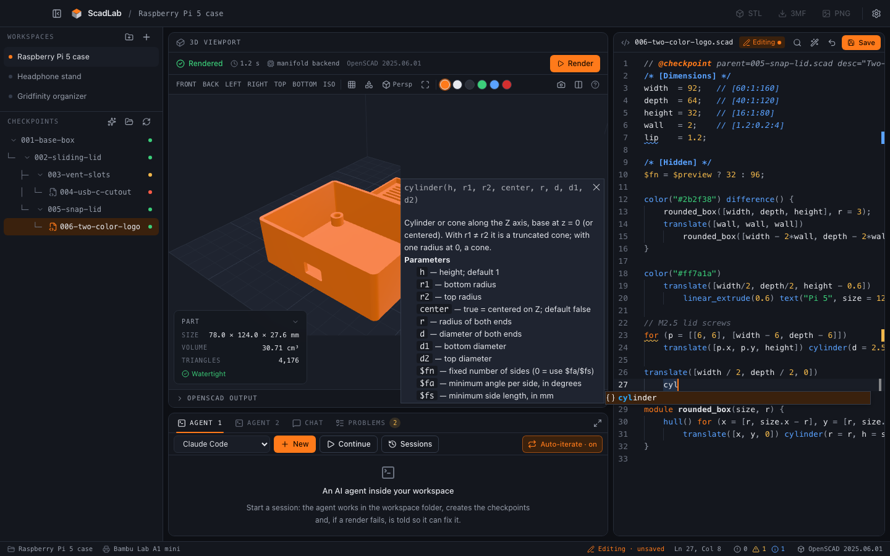
Edit mode: autocomplete offers cylinder with its signature and its parameters.
Find and replace
⌘F / Ctrl+F — find (also in read-only), with match case, whole word and regular expressions.
⌥⌘F or ⌘H / Ctrl+H — find and replace (in edit mode).
Enter / Shift+Enter — next / previous; Esc closes.
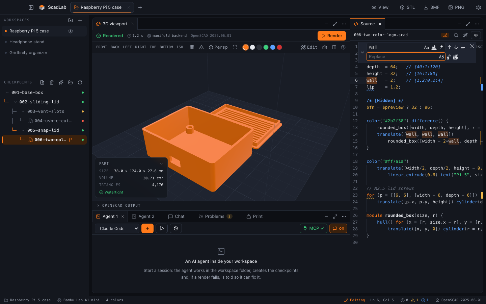
Find and replace: wall appears 6 times, all highlighted.
Format
The wand button, ⇧⌥F / Shift+Alt+F or the context menu tidy up the code: indentation
by braces and parentheses, one space around = and operators, no trailing spaces or extra blank
lines. It is conservative: it never joins or splits lines, does not touch the inside of strings
or comments and respects the alignment of the // [min:step:max] annotations. A single
⌘Z undoes it. In read-only, formatting switches to editing first. The indentation (2 or 4 spaces) is chosen in
Settings → General → Code editor.
The linter
While you edit —and once when opening each checkpoint— ScadLab checks the code: first with OpenSCAD's own parser
(syntax errors, unknown variables and modules, includes that do not exist) and then with
its own rules, designed for printing and for the checkpoint workflow. Problems are underlined (red: error,
amber: warning, blue: suggestion) and hovering shows the message with its code.
Code
Type
What it flags
Why it matters
syntax
Error
What OpenSCAD says when reading the file
With a syntax error there is no part.
SL001
Warning
The // @checkpoint parent=… desc="…" header is missing on line 1, or malformed
Without it, the checkpoint does not hang from the tree.
SL002
Warning
parent= points to a file that does not exist (or that is in the trash)
The checkpoint shows up orphaned in the tree. The warning has a “Make root” button.
SL003
Warning
A top-level part without color()
In the multicolor 3MF it would end up with no filament assigned.
SL004
Error
An include <…> / use <…> that cannot be found
The render fails or loses parts.
SL005
Warning
A checkpoint includes another checkpoint
Each checkpoint must be self-contained: if the other one moves, this one breaks.
SL006
Suggestion
$fn greater than 256 at the top level
Every circle in the model gets that resolution: slow renders and huge meshes.
SL007
Suggestion
minkowski() inside another minkowski() or hull()
The render can take minutes or hours.
SL008
Warning
A variable assigned twice in the same block
OpenSCAD only uses the last one: it is usually a mistake.
SL009
Suggestion
A Customizer parameter without // [min:step:max]
The Customizer cannot offer a slider with limits.
The diagnostics from the last render (Rendering and diagnostics) are also
marked in the code as long as you do not change it. Click any of them —in the viewer panel or in Problems— to
jump to that line.
The Problems panel
Next to Agent 1, Agent 2 and Chat, at the bottom, the Problems tab gathers what the linter and the
last render reported, errors first and by line, with their code and their source. The status bar counter
(⊗ errors ⚠ warnings ⓘ suggestions) opens it.
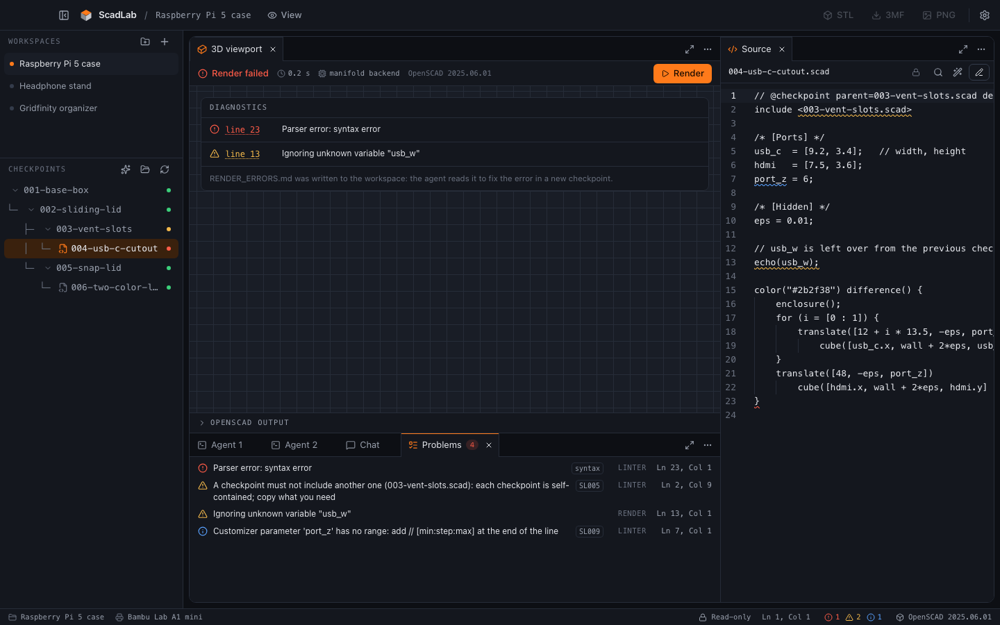
Problems of a broken checkpoint: linter and render together, with a click to the line.
Options
In Settings → General → Code editor: indentation (2 or 4 spaces), font size,
wrapping long lines and minimap. The editor follows the app's light or dark theme.
The window: panels and status bar Available
The work area works like a code editor: the 3D viewer, the code, the agents, the chat and
the problems are dockable panels. You move them, split them, put them in tabs,
float them or hide them, and ScadLab remembers how you left them.
The default layout: viewer and code on top, agents, chat and problems in tabs below the viewer. The status bar, at the bottom, sums up where you are.
The seven panels
Panel
What it is
Shortcut
3D viewport
The part of the open checkpoint, with its render status and diagnostics.
⌘⇧1 / Ctrl+Shift+1
Source
The OpenSCAD editor of the open checkpoint.
⌘⇧2 / Ctrl+Shift+2
Agent 1 and Agent 2
The two AI agent terminals.
⌘⇧3 and ⌘⇧4
Chat
The chat with models.
⌘⇧5 / Ctrl+Shift+5
Problems
Errors and warnings from the linter and the render.
⌘⇧6 / Ctrl+Shift+6
Print
Estimated weight, filament and cost of each part of the model. See Cost estimate.
⌘⇧7 / Ctrl+Shift+7
Each panel exists only once: opening it again takes you to the one that is already there. The sidebar (workspaces
and checkpoints) is not a panel: it stays on the left and folds separately.
Tabs
Each panel has its own tab, looking like an editor's: icon and name in regular type;
the active tab blends with its content and shows the ×, and the others, darker, show it on
hover. Some carry a status dot instead of the ×: orange on Source when
there are unsaved changes, green on Agent while the agent is running; on hover the dot turns back
into an ×. Problems adds up the number of entries.
Drag a tab to reorder it within its group or take it to another group.
Double-click a tab to maximize its group; another double-click restores it.
Right-click the tab (or the ⋯ button on the group bar): Hide,
Hide the others in the group, Minimize / Restore panel, Maximize / Restore,
Move to… and Float / Dock.
On each group's bar, to the left of maximize, the – button
minimizes it.
With many tabs in a narrow group, the bar scrolls horizontally (wheel or trackpad) and a menu lists
the ones that fell out of view.
Split and dock
While you drag a tab, a highlighted zone appears over each group: drop it in the center to
add it as a tab of that group, or on an edge (left, right, top or bottom) to
split so the panel ends up in a new group on that side. That is how you set up, for example, the chat next to
the terminal instead of in tabs.
Dropping on a group's edge splits that group. To take a panel to the edge of the whole area
(for example, the chat in a full column on the left) use Move to…:
it does not depend on dragging.
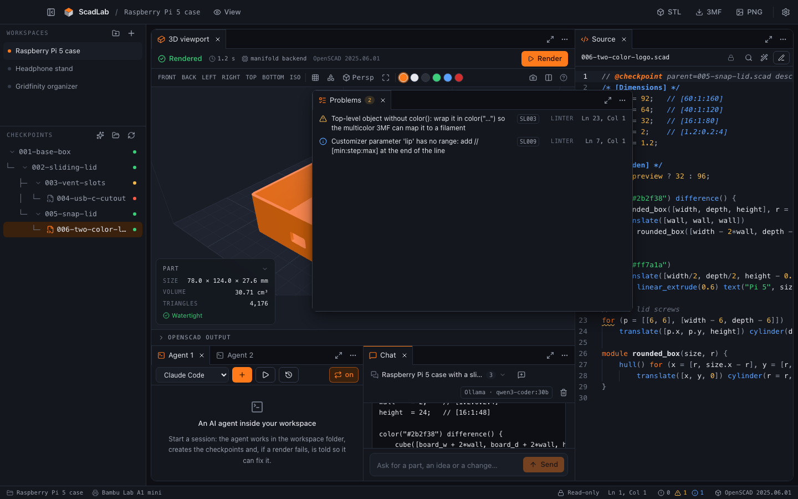
A custom layout: the chat split next to the terminals and Problems floating over the viewer.
Move to… (without dragging)
The group's ⋯ menu and each tab's right-click have Move to…, with
destinations that always work, no dragging. It works for any panel —3D viewport, Source, Agent 1,
Agent 2, Chat and Problems— and moving destroys nothing: it only changes place; the viewer keeps its camera, the
editor its text and the terminal its agent.
Left, Right, Top and Bottom: the panel goes to the
edge of the whole panel area. If a group already occupies that edge, it joins it as a tab; if not, a new one
spanning the whole edge is created.
Center: as a tab of the largest docked group (almost always the viewer's).
Next to…: lists the other panels in view; the one you choose gets the panel as a tab of
its group.
Float / Dock: takes the panel out to a floating window or puts it back in the grid.
A destination that would change nothing (for example, Right for a panel that is already alone on that edge) appears
dimmed. Dragging the tab keeps working for whoever prefers it: while you drag, the destination is marked with an
accent-colored box with a border.
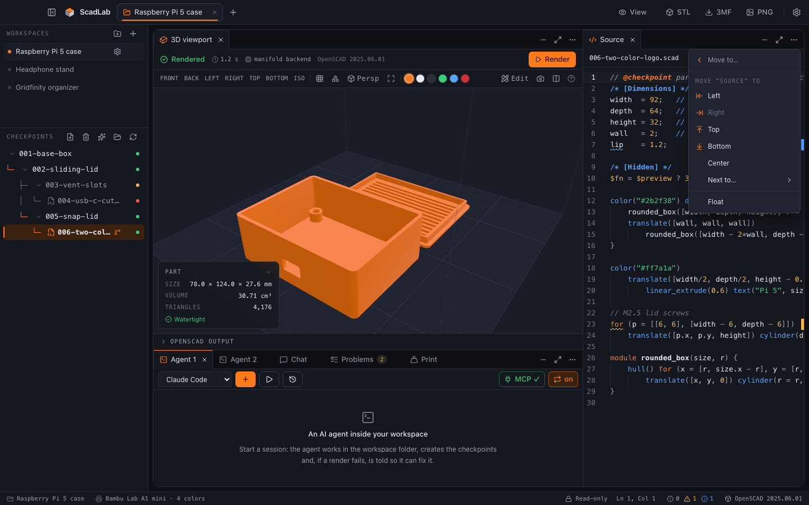
“Move to…” for the source panel: four edges, the center, “Next to…” with the other panels, and Float.
Minimize a panel
The – button on each group's bar (Minimize panel), ⌘⇧M /
Ctrl+Shift+M with the group active, or View → Minimize panel shrink it without closing it:
A group stacked above or below another is reduced to its tab bar.
A group side by side with another becomes a narrow strip with its tabs' icons
vertically (a green or orange dot stays in view if an agent is running or there are unsaved changes).
A floating group shrinks to its tab bar.
The other panels share the freed space. To restore: a click on any tab or
icon of the group, the + button (Restore panel) or a double-click on the empty part of its bar; it goes back
exactly to its previous size. Nothing is destroyed: it is the same rule as hiding. A group with no
neighbor to take over its space cannot be minimized (the button is dimmed). What is minimized is saved with the layout,
also in named layouts.
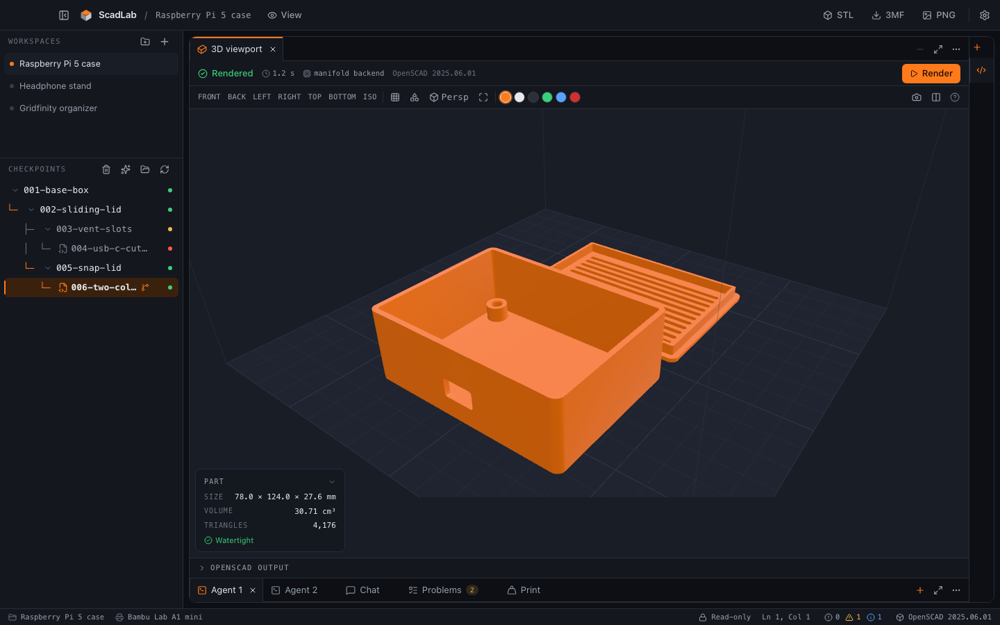
The source minimized to a strip on the right and the agents to their bar, at the bottom: the viewer gets the rest.
Panel sizes
Every edge between two groups is a divider you drag in both directions: the line is
1 px, but the grab zone is about 6 px and the cursor changes when you hover over it.
Double-clicking a divider splits the space equally between its two sides.
No panel can be left unusable: the viewer does not go below about 200 × 150 px, the code and the terminals
about 240 × 120 px (these sizes grow with the interface size).
Sizes are saved with the layout, also in named layouts.
If you shrink the window, the groups share the space proportionally instead of overflowing it.
Floating panels
Float (right-click the tab) takes the panel out to a window that lives inside ScadLab,
on top of the others. You move it by dragging its tab bar and resize it from any edge or corner,
and it cannot leave the window. Dock puts it back in the grid. A floating group can carry
several tabs.
System windows
Panels cannot be pulled out into a native Windows or macOS
window (for example, to move the viewer to a second monitor): ScadLab runs in a single system
window and the floating ones live inside it. To work on several projects at once, use the
header's project tabs.
Hide and show
Any panel is hidden with the × on its tab, with its checkbox in the View
menu or with its shortcut, and shown again the same way: it reappears next to the tabs it was with. Hiding
destroys nothing: the viewer keeps its camera, the editor its text and its undo history, and the terminal its
screen and its agent, which keeps running. Only the × button on the terminal's bar ends the agent.
If you hide all panels, the work area shows a screen with buttons to open them again or
apply a layout; there is never a blank gap. The sidebar and the status bar can also be hidden,
and everything is remembered when you reopen the app.
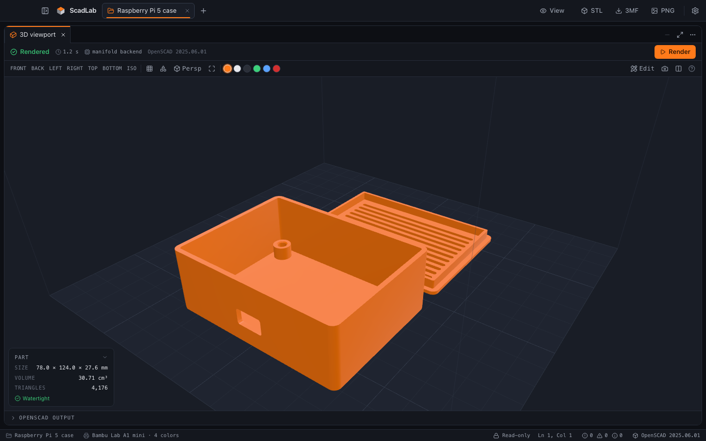
Only the viewer, with the sidebar hidden: the other panels are still alive, just out of view.
The View menu
The header's View menu gathers everything: a checkbox for each panel (with its shortcut), the
sidebar and the status bar, Maximize panel, Minimize panel, Focus mode and
the layouts.
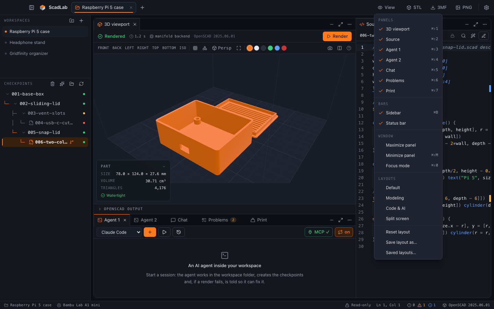
The View menu, with a checkbox per panel and the layouts at the end.
Layouts
A layout is where each panel is and its size. ScadLab ships four:
Default: viewer and code on top; agents, chat, problems and print below.
Modeling: large viewer; code and agents as tabs on the right.
Code & AI: large code, the agent beside it and a small viewer.
Split screen: viewer and code half and half, agents below.
Reset layout goes back to the default. To save your own, use View → Save layout
as…, give it a name (if one with the same name exists, it asks before replacing it) and it will appear in the menu.
View → Saved layouts… lists them so you can apply or delete them.
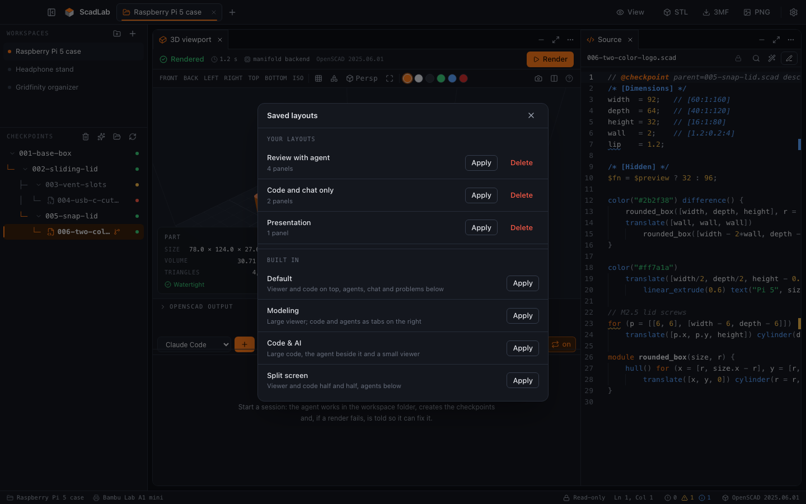
Saved layouts: yours (Apply / Delete) and the built-in ones.
The current layout is saved automatically and restored when you open the app. If the saved layout were damaged or from a
different version, ScadLab opens with the default one instead of failing.
Focus mode
⌘⇧0 / Ctrl+Shift+0 (or View → Focus mode) leaves only the active panel, with no
sidebar, no status bar and none of the other panels. Esc —or the same shortcut, or the
corner button— goes back exactly to the previous layout. With the focus inside the editor or the terminal, Esc still
belongs to them: leave with the shortcut.
Shortcuts
Shortcut
What it does
⌘⇧1 … ⌘⇧7 (Windows: Ctrl+Shift+1 … 7)
Shows and focuses the Viewport, Source, Agent 1, Agent 2, Chat, Problems or Print. If it is already focused, it hides it.
⌘⇧0 / Ctrl+Shift+0
Focus mode.
⌘⇧M / Ctrl+Shift+M
Minimizes or restores the active panel group.
⌘B / Ctrl+B
Folds or shows the sidebar.
On macOS, the system reserves ⌘⇧3, ⌘⇧4 and ⌘⇧5 for screenshots and they do not reach
ScadLab: for those panels use ⌘⌥3, ⌘⌥4 and ⌘⌥5 (they also work for the rest) or the View menu. The shortcuts
do not override the editor's or the terminal's.
Small windows and large type
The window supports down to 1024 × 640. When a panel runs out of space, its bars
adapt instead of cutting off controls: the buttons of the terminal, the editor and the header switch to showing
icon only (the name stays in the tooltip on hover) and, if they still do not fit, they
spread over a second row. The tab bar and its measurements also grow with the
interface size.
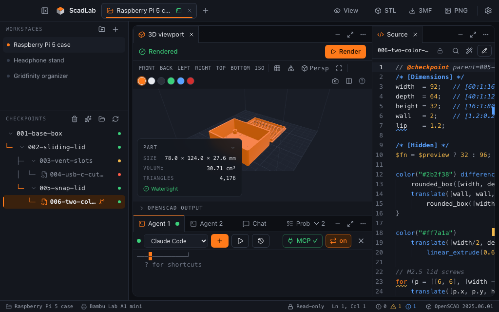
In the minimum window (1024 × 640) nothing gets cut off: the groups share the space and the bars adapt.
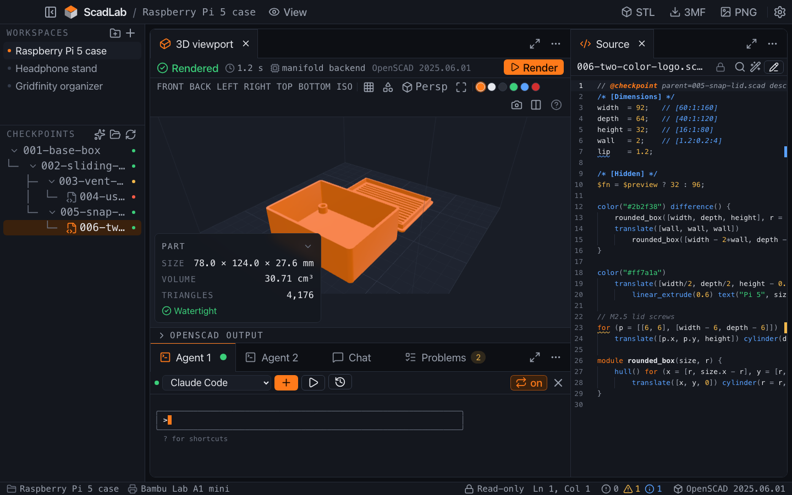
With the interface at 150%, the tabs and the panels' minimum sizes grow with it.
Collapsible sidebar
The button on the left of the header, ⌘B / Ctrl+B or the View menu checkbox hides and shows
the workspace list and the tree, leaving the full width to the panels. Its width, and the split between workspaces and
checkpoints, can be dragged and are remembered.
Reset the layout
View → Reset layout puts the panels back to the default. In Settings → General,
Reset the layout does that and also returns the sidebar to its factory size and shows the hidden
bars. More about type and the interface in Appearance and sizes.
Collapsible viewer measurements
The part measurements panel folds with its arrow: only the size is left, on one line. Useful in the split
view, where the full panel used to cover the part.
The status bar
The open workspace and printer.
Editor mode (read-only / editing, and whether there are unsaved changes) and the cursor position.
Problems: errors, warnings and suggestions of the open checkpoint; a click shows the panel.
OpenSCAD: the version ScadLab renders with, or the notice if it cannot find it. Without an installed OpenSCAD it shows
the WASM 2025.12.30 badge (the built-in engine); a click opens Settings → OpenSCAD.
Agents in the terminal
An integrated terminal runs the agent you prefer inside the workspace. The agent writes
checkpoints and you see them appear in the tree, without leaving ScadLab.
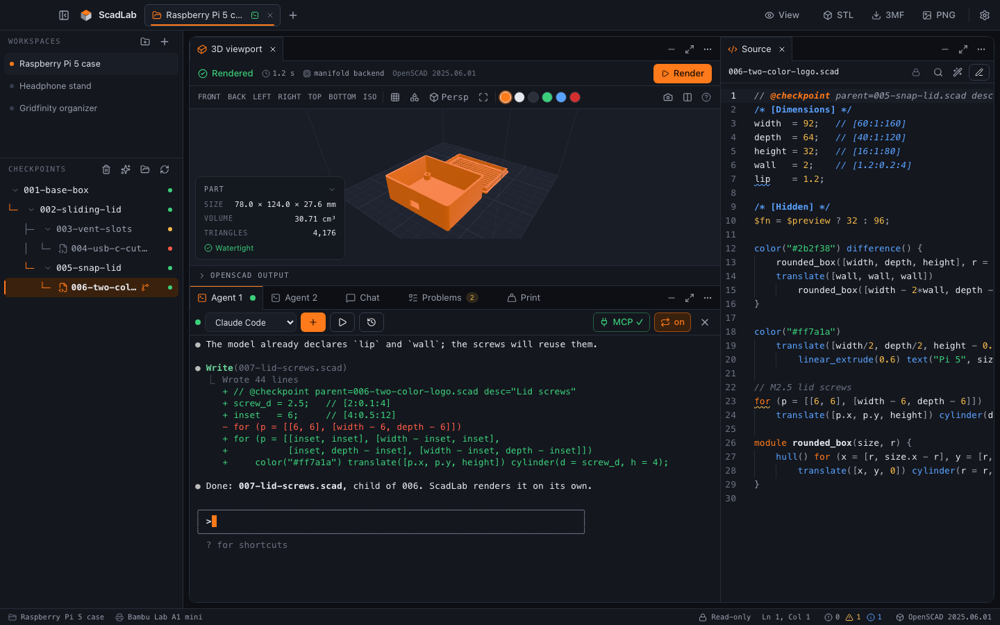
Claude Code writing a checkpoint in the workspace terminal. On the bar above: agent, New, Continue, Sessions and the auto-iterate switch.
Opening an agent
Below the viewer there are four panels, in tabs: Agent 1, Agent 2,
Chat and Problems
(you can move them, see The window).
Open an agent's panel and choose the agent in the selector.
Click New. The agent starts in the workspace folder, so whatever it creates shows up as a
checkpoint in the tree.
If an agent is already running in that tab, ScadLab asks before closing it to open another. Checkpoints already
saved are not touched.
Which agents
Claude Code, opencode, Codex and Antigravity — only the ones that are installed and enabled in
Settings → AI: detection decides what shows up in the selector. If there is
none, the tab says so with a button that opens that setting. To talk to a model without installing
any CLI, there is the chat with models.
On the panel bar, the MCP ✓ indicator confirms the agent has the tools of the
ScadLab MCP server in this workspace.
Sessions
New opens a clean conversation.
Continue opens that agent's last conversation in this workspace.
Sessions lists that agent's previous conversations in this workspace, with their title and
their date, so you can resume the one you choose.
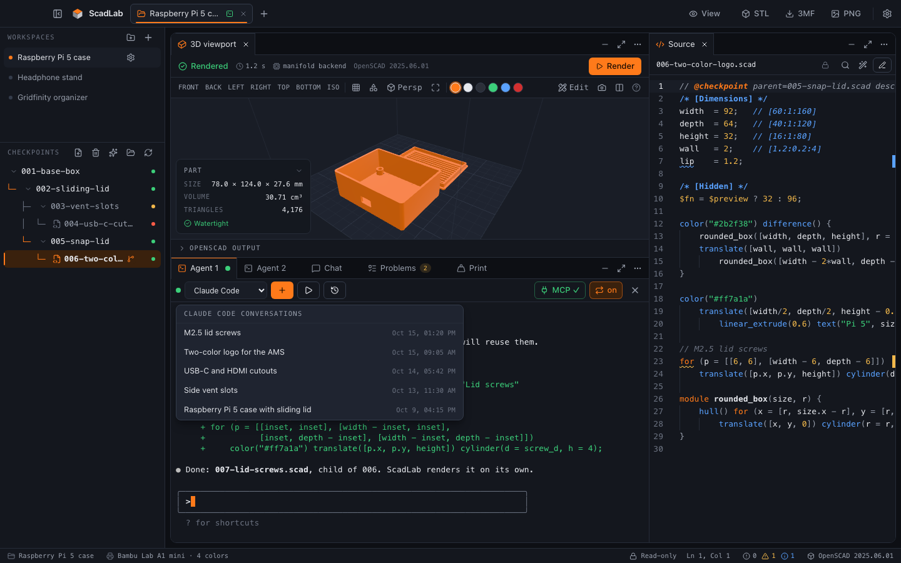
Sessions menu with the previous Claude Code conversations in this workspace.
Antigravity
Antigravity does not allow listing its conversations, so it only
offers New and Continue.
If you reload the interface
The agents stay alive: when the interface reloads, each terminal reconnects to its agent and recovers
what it had on screen. When an agent ends on its own, the terminal shows its exit code and
you can open another session.
Copy and paste
⌘C (Ctrl+C on Windows) copies the selection.
On Windows, Ctrl+Cwith no selection interrupts the agent, as in any terminal.
On macOS, ⌃C always reaches the agent.
⌘V (Ctrl+V on Windows) pastes; multi-line text is pasted all at once, not line
by line.
Maximize the panel
The button in the corner of the panel bar (or a double-click on its tab) enlarges its group to cover the whole
work area, handy for reading a long answer; clicking it again returns to the normal size.
Limits
Up to 2 agent terminals at a time —for example one with Claude Code and another with Codex
comparing approaches—. The × on the bar closes the terminal and ends the agent.
Workspace rules: CLAUDE.md and AGENTS.md
Each workspace carries a rules file that the agent reads on start. It is what guarantees
the history does not break, whichever agent you use.
Which file each agent reads
CLAUDE.md — Claude Code.
AGENTS.md — opencode, Codex and Antigravity.
The mandatory rules
Never overwrite or delete a .scad: each change is a new checkpoint.
Use colors: every top-level part inside color(...).
Validate each checkpoint with the tools of the ScadLab MCP server (or with OpenSCAD on the command line if they are not available) before calling it done.
Parameters at the top, with Customizer comments; everything in millimeters.
Respect printer.json: the model has to fit on the plate.
Tip
You can add your own rules at the end of the file —“always use
4.2 mm M3 inserts”, “no overhangs greater than 45°”—, but do not remove the mandatory ones: they are what
keeps the checkpoint tree coherent.
Your notes are not overwritten
ScadLab's rules go inside a marked block in CLAUDE.md and AGENTS.md
(between <!-- scadlab:rules:begin --> and <!-- scadlab:rules:end -->). Every time you
open the workspace, ScadLab updates only that block with the current version's rules (for
example, the MCP tools or the branches): whatever you write before or after the block stays as it is.
If the file was created by an earlier version of ScadLab (no markers), a copy is saved in
.scadlab/backup/ before replacing it, in case you had edited it.
If you import a folder that already had its own CLAUDE.md, the block is added at the top and your
instructions stay below, intact.
The ScadLab MCP server
An MCP server that gives the agent tools to render, validate, measure and see
its models with the same OpenSCAD and the same engine the app uses. ScadLab leaves it configured automatically in each
workspace for Claude Code and opencode, and passes it to Codex through flags; Antigravity only has a
global configuration, so it is added with a button and your permission. From this version the AI can do with its tools everything you do with the interface —change measures, create from templates, edit an STL, estimate and orient the print, install libraries and use the trash—: see the full list.
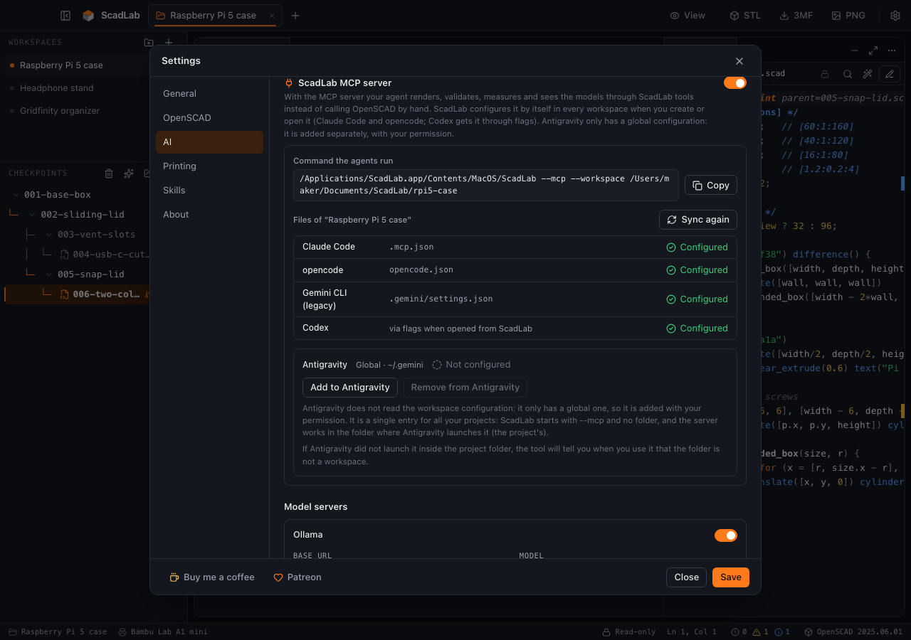
Settings → AI: the switch, the command the agents use, the state of the open workspace's files and the Antigravity row (global configuration) with its buttons.
What it is and what it is for
MCP (Model Context Protocol) is the standard way to give tools to an AI agent. ScadLab's server
is the program itself launched as ScadLab --mcp --workspace <folder>: it opens no
window, works on the workspace's files and works even with the app closed (for
example, with an agent launched from an external terminal).
Without it, the agent has to guess whether its code compiles and how the part came out. With it, it checks before
telling you it is done: it renders, reads the diagnostics with their line, measures the part, looks at how it looks and exports it.
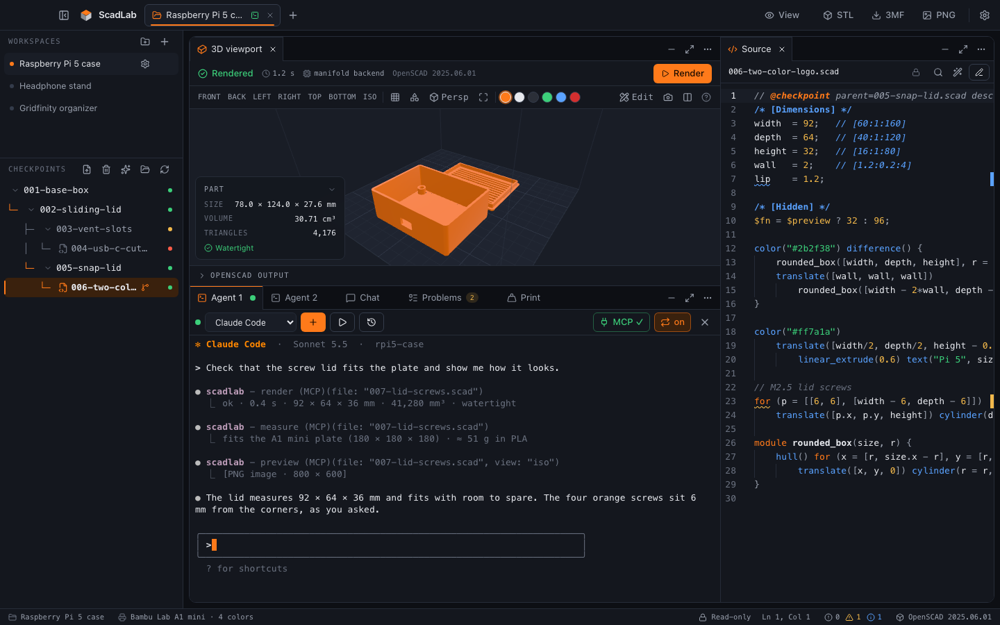
Claude Code using ScadLab's tools: it renders, measures and looks at the part. On the panel bar, the “MCP ✓” indicator.
Which tools it has
Tool
What it does
Mode
list_checkpoints
The workspace tree: file, parent, description, your label, children and last known render status; also the active parent.
Query
read_checkpoint
Returns a checkpoint's code.
Query
create_checkpoint
Creates a new checkpoint (NNN-slug.scad, with its header) from a parent. It never overwrites an existing one.
Agent
set_active_parent
Chooses which checkpoint the next one branches from (your “Branch from here”) or clears it.
Agent
rename_checkpoint
Changes the label the tree shows for a checkpoint. The file and its header do not change.
Agent
trash_checkpoint
Moves a checkpoint (or its whole branch) to the trash; a single one's children hang from its parent instead. It never deletes anything: deleting for good or emptying the trash is only something you can do, from the interface.
Agent
list_trash / restore_checkpoint
Lists the trash / brings a checkpoint back, with its label (and its children hang from it again). It never overwrites an existing one.
Query / Agent
list_refs
The STL, 3MF and OBJ files in refs/: name, format, size and date.
Query
render
Renders a checkpoint (by default, the newest) and returns the status, the diagnostics with their line, the duration, the size, the volume, the triangles, whether it is watertight and whether it fits on the plate. It writes or deletes RENDER_ERRORS.md with the same rule as the app.
Query
lint
The linter diagnostics (OpenSCAD and the SL001–SL009 rules) of a file or a loose snippet of code.
Query
format
Returns the formatted code; it does not write files.
Query
preview
A PNG image of the part (eight named views or a free angle) rendered with OpenSCAD, so the agent sees what it modeled.
Query
measure
Part measurements, the printer's volume, whether it fits and the estimated weight with the default material (100 % solid).
Query
get_parameters / set_parameters
Reads the Customizer parameters (type, value, range, options) / saves a child checkpoint with new values without rewriting the model.
Query / Agent
list_templates / get_template
Lists and reads the openscad-templates templates.
Query
create_from_template
Creates a checkpoint from a template, with your measures already set and your printer's plate.
Agent
list_libraries / install_library
Says which libraries you have (BOSL2, MCAD, NopSCADlib) and the exact include line / downloads one into lib/, a fixed and verified version. It never replaces an installed one.
Query / Agent
list_skills / read_skill
Lists the workspace's skills and reads their SKILL.md.
Query
inspect_reference
Measures a model in refs/ (size, volume, parts by color) and returns a picture.
Query
image_info
Reads a photo in refs/images/: size, proportion, dominant colors and the box of the object; with a region, a zoomed and enhanced crop.
Query
compare_with_image
Compares a checkpoint's model with a photo: an image with both side by side (or the silhouette over the photo), the view used, the proportions and the silhouette overlap (IoU).
Query
trace_image_outline
Traces a photo's silhouette to an SVG in millimeters in refs/ (one per color with layers) and returns its measurements and the import() snippet.
Agent
image_to_heightmap
Turns a photo into a height map for surface() (relief or lithophane), saved in refs/.
Agent
import_mesh
Makes an STL, 3MF or OBJ in refs/ editable: creates a root checkpoint that imports it.
Agent
edit_mesh
Edits a 3D model like the viewer's Edit mode (move, rotate, scale, mirror, center, rest on the plate, recolor, add pieces, drill and cut) and leaves a child checkpoint.
Agent
printer_info
The workspace's printer: volume, nozzle, AMS slots and key rules.
Query
estimate_print / list_materials
Weight, meters and cost with the requested material and infill / the available materials.
Query
suggest_orientation
Tries the six faces down: which fits the plate, how much overhang it leaves and how tall it is; returns the operations to apply it.
Query
export
Exports to STL, 3MF, one STL per color or PNG into the workspace's exports/ folder, with the parts and the warnings.
Agent
The Query ones are available in “Query only” and in “Agent”; the Agent ones change the project (a checkpoint, the tree, exports/, lib/) and only exist in “Agent”. All paths are resolved inside the workspace and a checkpoint is never overwritten or deleted (“deleting” is moving it to the trash). Outside it, only the mesh cache is written.
What the AI can do is what you do with the interface: change measures without rewriting the model, create from a template, edit an STL, estimate the print and suggest how to place it on the plate, install BOSL2 and send versions to the trash. Each step shows up in the chat with its card, and the tree and the trash update right away.
How it is configured in each CLI
When you create, import or open a workspace, ScadLab writes the scadlab entry in the
project configuration file each CLI reads. It never touches your user's global configuration on
its own; the only exception is Antigravity, which only reads global configuration, and only when you pick it in the chat or open its terminal (see below).
CLI
File in the workspace
Entry
Claude Code
.mcp.json
mcpServers.scadlab
opencode
opencode.json
mcp.scadlab
Gemini CLI (legacy)
.gemini/settings.json
mcpServers.scadlab
Codex
— (does not read project configuration)
flags at launch, see below
Antigravity
— (global configuration only; see below)
automatic when you pick it in the chat or open its terminal; the Add to Antigravity button repeats it by hand
Heads up
.gemini/settings.json is the file of the legacy Gemini
CLI (gemini), the one Antigravity replaced. Antigravity (agy) does not read
it: we checked with agy mcp list, which with that file in the project still says “No MCP
servers configured”. ScadLab keeps writing it for anyone who still uses gemini, but for Antigravity
the button is needed.
In all of them the command is the same: ScadLab's executable with --mcp --workspace and the workspace
folder. If you move or update the app, the executable's path changes: ScadLab fixes it the next time you
open the workspace.
What ScadLab respects in your files
It merges only the scadlab key: the rest of the file —your other servers,
your settings, the order and the indentation— stays exactly as it was. If you added your own fields to the entry
(a timeout, for example), they are kept.
If the file is not valid JSON (or the block is not an object), it does not touch it:
it marks it as “Left alone” in Settings → AI so you can fix it.
If your project has an opencode.jsoncwith comments and no
opencode.json, it does not touch it either (editing it would delete your comments): add the entry by hand
with the command shown in Settings → AI.
Syncing several times changes nothing if it was already up to date: the file is not rewritten.
Codex: through flags when opened from ScadLab
Codex does not read project configuration. That is why, when you open it in ScadLab's terminal, the app adds to it at
launch two -c flags with the server's command
(mcp_servers.scadlab.command and mcp_servers.scadlab.args). It only applies to the Codex you
open from ScadLab; if you launch it yourself in another terminal, it will not see the server.
Antigravity: global configuration, added when you pick it
Antigravity does not read project configuration or accept being handed a server at launch: its only MCP server
configuration is global (the ~/.gemini folder) and is managed with the
agy mcp command. And without the server it has none of ScadLab's tools: it tries the shell, which is denied, and the turn leaves nothing. That is why, when you pick Antigravity in the chat or open its terminal,
if agy mcp list does not list scadlab, ScadLab registers it on its own with agy mcp add -- scadlab <ScadLab> --mcp and tells you with a message that it added it to its
global configuration. It only adds what is missing: an entry that already exists —even if it points to another path or is disabled— is your decision and is left alone. With the MCP server turned off in Settings → AI it does nothing.
If agy does not let it add it, the error says why and the chat explains that without that server Antigravity cannot create checkpoints; you can still ask it for the design in a block and ScadLab saves it
with the automatic save. In Settings → AI → ScadLab MCP
server there is an Antigravity row with its state and two buttons to do it by hand:
Add to Antigravity: before doing anything it warns you that it will modify Antigravity's
global configuration, that is, that of all your projects and not just this
workspace. If you accept, it runs agy mcp add with ScadLab's executable and --mcp. If a
scadlab server with another path already existed (because you moved the app), it replaces it; your other servers
are not touched.
Remove from Antigravity: likewise, with confirmation; it runs agy mcp remove scadlab.
The state can be agy not installed, Not configured, Configured, Other path
(the app moved: “Add” fixes it), Disabled or Could not read; it comes from
agy mcp list.
The global entry is scadlab → <ScadLab> --mcp, without
--workspace: the server uses the folder it is launched from, and Antigravity launches it in the
project folder, so a single entry serves all your workspaces. That is the delicate point:
if in your version of Antigravity the server were not launched inside the project folder, the tool
will tell you when you use it (that folder would not be a workspace). As a safeguard, in every chat turn ScadLab puts the project folder in
the SCADLAB_WORKSPACE variable, which the server uses if it has no --workspace (and its first line in the log says which one it used). If it still
works in another folder, remove the entry from here and add it by hand with --workspace.
Antigravity in the chat: approving ScadLab's tools
Registering the server is not enough. When ScadLab runs Antigravity from the chat (agy --print) nobody can answer a
permission prompt, so Antigravity refuses the first tool it was not pre-approved for —“permission check failed for mcp
scadlab/…”— and ends the turn right there: the chat used to say it “finished the turn without saying anything”.
To avoid it, ScadLab adds to Antigravity's own settings file, ~/.gemini/antigravity-cli/settings.json, one rule per ScadLab tool
under permissions.allow, in the exact format Antigravity asks for: mcp(scadlab/list_checkpoints), mcp(scadlab/create_checkpoint)…
It is an explicit list of ScadLab's own tools —the reading ones and the ones that create or change the project—: never a wildcard, never command(…).
It does it the first time you use Antigravity in the chat, next to registering the server, and a notice tells you what it added and where; from then on it keeps the list
in sync on every turn (it adds the tools that are new and removes the ones that no longer exist). Everything else in the file —trustedWorkspaces, your own rules,
the order of the keys— stays as it was; a copy of the file is saved first in ScadLab's data folder, and if the file is not valid JSON it is not touched (the chat tells you).
“Query only” keeps working. The rules are global —the same in Agent and in Query only—, so ScadLab's own server enforces the mode: during a Query-only turn
the chat leaves a mark in the project (.scadlab/turn-mode, removed when the turn ends, with an expiry so it is never left behind) and the server refuses the tools that change the project
with the reason, so Antigravity hands you the design in a block. In Agent mode everything goes through. The shell stays denied and --dangerously-skip-permissions is never used.
They are global
The rules apply to every use of Antigravity, also when you open it yourself (in ScadLab's terminal or anywhere else): its permission prompts
will not ask for ScadLab's tools, the ones that write included. If you prefer to approve them one by one, remove them as explained next.
See, remove or repair the permissions
In Settings → AI providers → Detected CLIs, Antigravity shows “ScadLab permissions: N tools approved” with two buttons. Remove
deletes only the mcp(scadlab/…) rules (after asking, and saving a copy of the file first); it is a decision ScadLab respects: it does not add them back by itself.
Add back puts them again and restores the automatic sync. If Antigravity blocks a ScadLab tool anyway —you removed the permissions, the file was not valid JSON, one of your own rules
asks first—, the chat message names the tool, the file and the step to follow, and a notice offers Repair Antigravity permissions, which syncs the list again.
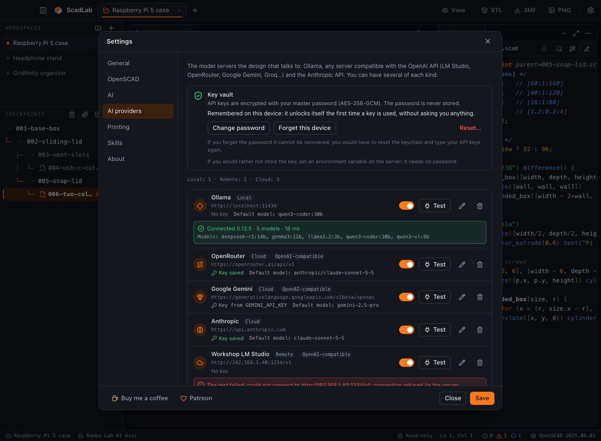
Under Antigravity, the permissions ScadLab keeps in its settings file, with Remove and Add back.
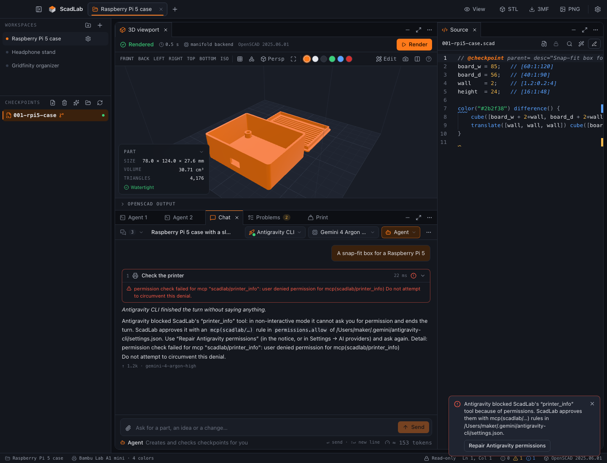
If Antigravity still blocks a tool: the message says which one and where ScadLab approves them, and the notice offers to repair the permissions.
Claude Code: no approval when opened from ScadLab
A server that comes in the project's .mcp.json stays pending approval until
Claude Code asks you, the first time, whether you trust it (we checked it with claude mcp list:
“Pending approval”). So as not to hold you up, when you open Claude Code in ScadLab's terminal the app passes it the server
with --mcp-config, which does not need that approval. If you open it yourself in another terminal, the
.mcp.json is used and Claude asks you once.
Turning it on, off and syncing
In Settings → AI → ScadLab MCP server:
The switch turns it on or off for all workspaces. Off, ScadLab removes its
entry from the files (and deletes the file if it only existed because of it) and stops passing the flags to Codex.
It is on by default.
The command the agents run can be copied, in case you want to configure a CLI ScadLab
does not know.
For the open workspace you see the state of each file: Configured, Missing,
Out of date (the app moved) or Left alone. Sync again repeats the
write without waiting for you to open the workspace.
The Antigravity row is separate because its configuration is global: it is added or removed with
its buttons, see Antigravity. The switch and “Sync again” do not
touch it.
If ScadLab cannot find OpenSCAD, the block says so: render, preview and
export do not work until you install it or set its path in the
OpenSCAD tab.
The “MCP ✓” indicator
On each agent panel's bar, to the left of auto-iteration, MCP ✓ says the
server is configured in this workspace. It changes to MCP ! (in amber) if some file was not left up
to date and to MCP off if you turned it off. A click opens Settings → AI with the details.
How to check that an agent sees it
Open a regular terminal in the workspace folder.
For Claude Code, run claude mcp list: scadlab shows up as Connected or,
if you have not approved it yet, as Pending approval (it is approved the first time you open
claude in that folder). Inside a session, the /mcp command shows the real status.
For opencode, run opencode debug config and look for scadlab inside
mcp. Its opencode mcp list only lists servers inside a git repository: in a
workspace that is not a repository it may say there are none even though the session does use it.
For Antigravity, run agy mcp list in any folder: scadlab must show up
as enabled with ScadLab's path and --mcp. Looking at the workspace is no use: agy does not read
.gemini/settings.json.
For Codex, open it from ScadLab's terminal and ask it to use the render tool (or to
list its tools): outside ScadLab it does not receive the server.
If a CLI does not see it
Claude Code asks you to approve the server. That is normal: the first time it opens a project with a
.mcp.json it asks whether you trust it. Accept.
The file shows up as “Left alone”. It has broken JSON or a format ScadLab does not
dare edit. Fix it (or add the entry by hand with the command shown in Settings → AI) and click
Sync again.
It shows up as “Out of date”. You moved or updated the app and the path changed: click
Sync again.
You opened the CLI with the app closed. It works all the same (the server is the app itself launched without a
window), but the path the file names has to still exist.
Codex does not see it. Open it from ScadLab's terminal: only there does it receive the flags.
Antigravity does not see it. ScadLab adds it by itself when you pick it in the chat; if it could not, or you removed it, click Add to Antigravity in Settings → AI: the
workspace file is not enough. If it says agy not installed, install Antigravity or check that the
agy command exists on your machine.
Antigravity “blocked ScadLab's tool” in the chat. The permission rules of ScadLab's tools are missing from its settings file (you removed them, the file was not valid JSON, or one of your rules asks first): click
Repair Antigravity permissions in the notice, or Add back in Settings → AI providers (see approving ScadLab's tools). If the message also says Antigravity does not trust the folder,
open it once with Antigravity and accept “Yes, I trust this folder”.
The tools fail when rendering. Check that ScadLab finds OpenSCAD (the OpenSCAD tab of
settings).
Auto-iteration on errors
If a checkpoint does not render, ScadLab tells the agent and asks it to fix it — without
you having to copy the error.
What it does
When an agent creates a checkpoint, ScadLab renders it on its own and, if it fails, leaves
RENDER_ERRORS.md in the workspace. If there is also an open agent in that
workspace, it writes a notice in its terminal for it to read and fix. Details of the file in
Rendering and diagnostics.
How it works
The agent creates 004-add-hinge.scad and ScadLab renders it.
OpenSCAD fails. ScadLab writes RENDER_ERRORS.md in the workspace with the file, the line and the message.
ScadLab writes in the agent's terminal a one-line notice asking it to read RENDER_ERRORS.md and fix it.
The agent creates 005-fix-hinge.scad with parent=004-…. 004 stays as it was.
# RENDER_ERRORS.md
File: 004-add-hinge.scad
ERROR: Parser error in file 004-add-hinge.scad, line 31: syntax error
Fix the error in a NEW checkpoint with parent=004-add-hinge.scad.
The notice the agent sees always starts with “ScadLab:”, so that no CLI mistakes it for a command:
ScadLab: the render of "004-add-hinge.scad" failed with 1 error. Read RENDER_ERRORS.md and fix it in a NEW checkpoint with parent=004-add-hinge.scad; do not edit the file that failed.
Why a new checkpoint
Fixing in place would break the immutability
rule and you would lose track of what the AI tried. That way the tree also shows the stumbles.
When it notifies and when it does not
It only notifies when the render of the newest checkpoint fails. Rendering an old one while you
browse the history sends nothing to the agent.
It notifies once per failure: if the same error repeats, it does not insist.
After 5 notices in a row without a successful render, it stops notifying so as not to burn your
agent's quota in a loop. It works again as soon as a render succeeds.
A cancelled render, or one without OpenSCAD installed, does not count as a model failure and does not notify.
With no agent open in that workspace, there is nobody to notify: RENDER_ERRORS.md stays for
when you open one.
The Auto-iterate switch, on the terminal bar, turns it on or off (it is on
by default). Off, the agent gets no notices; RENDER_ERRORS.md is still written.
Hermes: the chat with tools and AI providers
The Chat tab talks with the provider of your choice —an AI CLI you already have installed (Claude Code, Codex,
Antigravity, OpenCode) or a model server, local or in the cloud— and, in Agent mode, that provider uses ScadLab's own tools:
it creates a checkpoint, renders it, looks at it, measures it and fixes it by itself until the part is what you asked for. With a model server, that agent is called Hermes.
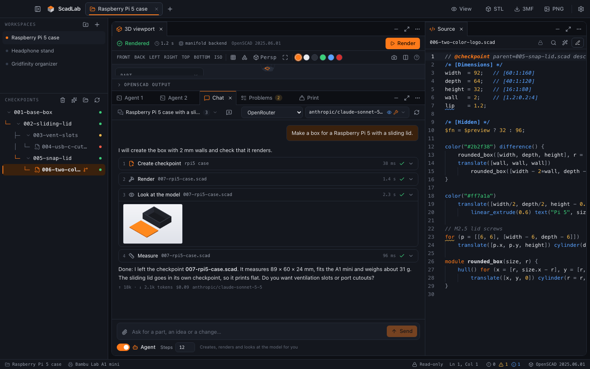
A turn in Agent mode: the bar on top, the steps as cards —with the link to their checkpoint, the mesh data and the picture the model saw— and, under the box, the mode, the shortcuts and the context counter.
Chat or terminal
The chat works inside ScadLab: it creates checkpoints, renders and measures without
you copying anything, and the conversation is saved per project. The agent in the terminal (Claude Code, opencode, Codex, Antigravity)
is still the way to get the full experience of a CLI; both use the same tools.
Your CLIs: detected on their own
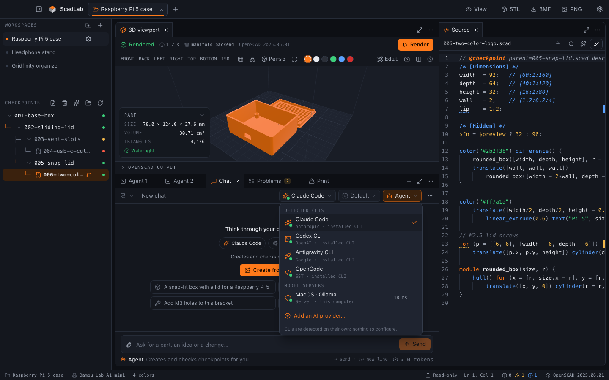
The provider picker: the CLIs ScadLab detected, your servers with their latency and, at the end, the way to add one.
Claude Code, Codex, Antigravity and OpenCode show up by themselves in the picker if you have them installed: there is nothing to configure and no path to type.
ScadLab looks for them in the PATH, in the usual locations and, on macOS, in your login shell's PATH (a graphical app does not inherit the terminal's).
One that is not installed does not show up, and one you just installed appears when you open the picker, without restarting. Each CLI runs in the workspace folder with the
ScadLab tools connected, and its steps reach the chat with the same cards Hermes uses; the conversation resumes with the CLI's own session.
Status dot over each icon: green means it responds (a CLI, that it is installed; a server, that it answers), red means it does not. Next to the picker, a
latency pill (18 ms) for servers, refreshed by itself every minute, when you switch provider and with a click; if the server goes down, a notice above the box says so and lets you retry.
It works from the keyboard: ↑↓ move, Enter picks and Esc closes.
Add an AI provider… opens Settings → AI providers, where you also see the detected CLIs with their version.
AI providers: servers and keys
Settings → AI providers: the detected CLIs (they are not configured here, apart from the permissions of ScadLab's tools in Antigravity), the key vault and as many servers as you want, each with its test.
In Settings → AI providers you add the servers the chat can talk to, several of each kind. Add server
offers shortcuts that already bring the address: Ollama (local and remote), LM Studio, llama.cpp, vLLM, OpenAI,
OpenRouter, Google Gemini, Anthropic, Groq, DeepSeek, Mistral, Together, xAI or any
OpenAI-compatible server.
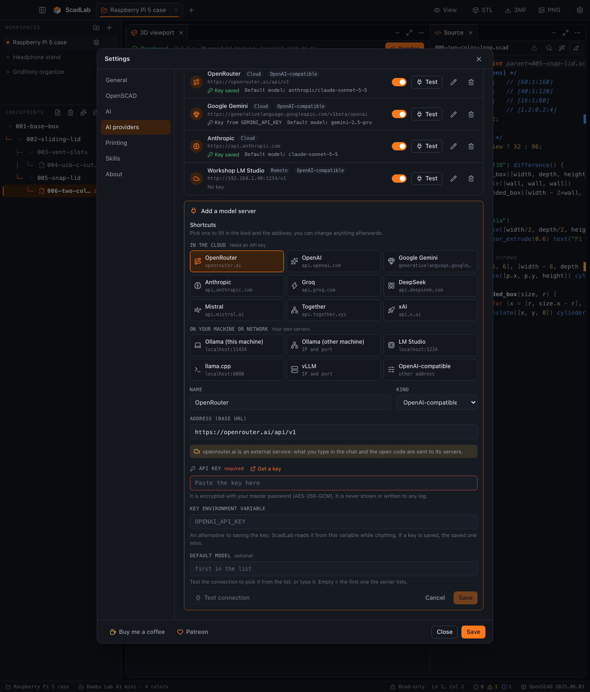
Add server: pick a shortcut, paste the key and click Test connection.
Test connection tells you, before saving, whether the server answers (and how many models it has) or why
it does not: refused connection, timeout, wrong key (401).
The API key is stored encrypted (AES-256-GCM) in the settings database, with a key derived from your
master password, never in plain text, and it is never shown again or
leaves your machine except toward the server you chose. Leave the field empty when editing to keep the saved key.
If you prefer not to save it, type the name of an environment variable that holds the key; ScadLab reads it
from there (also if you defined it in ~/.zshrc), with no password at all.
The servers you already had from earlier versions are kept, and your old chats still open.
Import your mini-tools servers
First the list of what is there, then the confirmation: keys are not copied.
If you already have servers in mini-tools, Import servers from mini-tools (next to Add server) brings them in three steps: it shows the list, asks for
confirmation and only then copies them —name, type, address and default model—. The ones that already exist in ScadLab (same name or same address) are skipped.
ScadLab only reads those fields and never opens anything encrypted: keys are not copied, so each server arrives without a key and you type it again.
If mini-tools is not on your computer, the dialog says so and does nothing.
Master password: the key vault
The first time you save an API key, ScadLab asks you to create a master password. It is what encrypts your keys on this
computer (AES-256-GCM, with a key derived from the password using Argon2id); the password itself is never stored. You create it just once.
Create master password: type it twice, watch the strength bar and leave Remember on this device checked.
Remember on this device comes checked. ScadLab keeps the derived key —never the password— in the system keychain
(Keychain on macOS, Credential Manager on Windows) and from then on uses your keys with no questions: saving another key, chatting or
opening the app never asks again. The key is read from the keychain once per session, the first time something needs it.
If you uncheck it, or the system keychain denies access, ScadLab asks for the password once per session, and only when
something needs a key: sending a message to a server that has one, listing its models or testing the connection. After you type it,
the action you were doing goes on by itself.
Unlock: once per session, only when a key is needed. Check Remember on this device here if you would rather not type it again.
In Settings → AI providers → Key vault you can change the password (every key is encrypted again,
all or nothing), Forget this device (deletes the key from the system keychain) or Reset.
If macOS ever asks whether ScadLab may use the keychain, Always Allow avoids the question; if you deny it, nothing breaks:
ScadLab just asks for the password once per session.
The environment-variable alternative above needs no password at all.
No way back
A forgotten master password cannot be recovered. The only way out is
Reset, which deletes every saved API key and the password (the servers stay, without a key); then you type the keys again and
create a new password.
Starting a chat and choosing the model
A new chat says what you are about to talk to and suggests four requests; a click fills the message box.
Open the Chat tab and click New chat. You see the provider, the model and the mode you are going to talk to, and four suggestions
(a snap-fit box with a lid for a Raspberry Pi 5, copy the part in this photo…): a click fills the message box and you edit it before sending. Above them, Create from an image opens the dialog to model from photos.
Pick the provider and then the model: the list comes from the provider, with a search box. On a server, each model shows whether it
sees images and whether it uses tools —when the server reports it—, its context window and, with providers that publish prices
(OpenRouter), what it costs per million tokens. The Vision only button shows only the models that see images. If the provider does not list it, type the name by hand.
Type what you want and send with Enter (Shift+Enter adds a line; ⌘/Ctrl+Enter also sends).
A CLI's models are reported by the CLI itself. Default lets it use whichever it has configured.On a server, the picker searches and marks which models see images (eye) and which use tools (wrench).
You can change provider and model in the middle of a conversation: the history is kept and the next message already
uses the new one. ScadLab remembers the last one you picked in each project.
The chat bar and narrow panels
A 360 px panel: the bar stays on one line and a CLI's steps use the same cards.
The top bar always fits on one line: the conversation title (click it to rename), the provider with its latency, the model, the workspace and the mode.
When the panel shrinks, the secondary things fold: first the workspace chip and New chat move to the “…” menu; then the latency is hidden (the provider keeps its status dot) and the mode becomes just an icon; and in a very narrow panel
the provider and the model become icons with their description on hover and the mode moves to the menu too. There is no horizontal scroll or cut-off control from about 320 px up to a full window, and the dropdowns never leave the window.
Message box. The shortcuts are shown under the box: Enter sends, Shift+Enter adds a line and ⌘/Ctrl+Enter also sends.
Pending attachments show above the box and Stop shows a clock.
Context counter. Next to the shortcuts, the estimated tokens of the draft plus the conversation (4 characters ≈ 1 token) against the model's window, when the provider
reports it; it turns amber at 70 % and red at 90 %, and it is the cue to start a new chat. It does not count the system instructions or the attachments.
The modes: Ask only and Agent
The render failed: the card shows the line and the code, the model fixes it in a new checkpoint, renders again and looks at the picture.
The mode is picked in the bar (and under the box you read what it allows). Every new chat starts in Agent, with any provider: asking for a part has to end in a
.scad that is created, rendered and visible in the viewer, and that only happens if the provider can create. Ask only is your choice and it belongs to that conversation: the other chats stay
as they were and the next new chat starts in Agent again, even if you left another one in Ask only. The mode is saved with the conversation, so it is still there when you reopen it
(the Switch to Agent notice saves it there too).
Ask only
Agent
With a CLI
The CLI reads your project and uses the read tools (list and read checkpoints, check, render, measure, look). It does not create checkpoints or export.
It also creates new checkpoints and exports, and renders and looks at them for you.
With a server
The model only chats and proposes OpenSCAD code: you save it as a checkpoint.
The model uses the ScadLab tools in a loop until it solves the request (Hermes).
The terminal has no mode. The CLIs you open from the ScadLab terminal (Claude Code, Codex, Antigravity, OpenCode) are not restricted by ScadLab: they get the ScadLab server, the folders of your
other open projects and the session you resume, and nothing that puts them in plan or read-only mode, or that skips permissions —there you approve in your own terminal—. The same goes for ScadLab --mcp:
it offers the writing tools by default.
In neither chat mode does a CLI run shell commands or get permission to skip its own checks. In Agent mode, the model decides what to do: it looks at the checkpoints and the printer,
creates a checkpoint with complete code, renders it, looks at it from a view, measures it and, if something fails, fixes it in
another checkpoint (it never edits an existing one). It can also read the workspace skills and inspect the
references you attach. The checkpoints it creates show up in the tree like any other.
Each step is a card with the tool and its status. Without opening it you see the checkpoint it refers to —a link that selects it in the tree and opens it in the editor and the viewer—,
the mesh data of a render or a measurement (size, triangles, whether it is closed, whether it fits the plate) and, if it fails, the line and the offending code. The picture the model looked at
is shown in the card and can be enlarged with a click; a click on the card unfolds the arguments and the raw response.
The model sees what it draws if it has vision; otherwise it only gets the measurements and ScadLab warns you.
Steps (with a server): the limit of tool calls per message (1 to 30, 12 by default). When it is reached, the model summarizes what it
achieved and stops; ask it to continue if something is missing.
Stop shows a clock and cuts at once, even in the middle of a tool: what was already done is kept.
If the model does not use tools, “Agent” turns itself off and explains why; if the server rejects them on the
first try, the chat continues as plain text with a notice (and ScadLab saves the code it writes for it: see below).
It always ends in a part
A workspace with no checkpoints, a one-sentence request: the agent creates the first one, renders it and looks at it, and the part is already in the viewer.
In Agent mode the request of someone who does not know OpenSCAD has a single possible ending: a .scad that is created, rendered and visible. The provider follows the flow
create checkpoint → render → look → fix in a new one, and in a workspace with no checkpoint at all it creates the first one without asking (it becomes the root of the tree, with no parent).
Every checkpoint born in the chat —from a tool, from the automatic save or from a button— is selected on its own in the tree, in Code and in the viewer, and rendered, even if you have
auto-render off. If you are in the middle of an unsaved change in the editor, ScadLab does not switch your file: the checkpoint shows up in the tree and in the step card.
If the model answers with code: it is saved for you
The model has no tools and answered with the code: ScadLab saved it as a checkpoint and rendered it.
Some models cannot call tools (a small local model, for example) and some CLIs never got the MCP server: they answer with the design in a block and nothing else.
In Agent mode, if the turn ends without having created any checkpoint and its text carries a complete OpenSCAD block —the design one: the last complete block, if there are several—, ScadLab saves it for you:
as the root if the workspace is empty and, if not, as a child of the open file (or of the active parent), with its @checkpoint header. It renders it and shows it as one more step,
“Saved automatically”, with the link to the checkpoint. If the provider already created one with a tool, or wrote the .scad on its own, no duplicate is saved.
With a model server there is also a fallback loop: if the render fails and steps are left (the Steps limit), the model receives the errors with their line and sends the fixed block,
which is saved as a child of the one that failed. With a CLI it is a single attempt: the render card shows the error with its line and you ask for the fix in the next message.
Code in the answers: save it or open it
Answers with formatting —tables, lists, links— and each OpenSCAD block with its buttons.
Each OpenSCAD block comes with Copy and, once it has finished arriving, ways of bringing it into the project (in a narrow panel the buttons become icons with their description):
Create checkpoint and render (in Ask only, highlighted): saves the code as a checkpoint without asking (the name comes from the block's header), selects it in the tree, in Code and in the viewer,
and renders it. In a workspace with no checkpoint at all it is the root: you no longer have to ask an agent for “the first one” beforehand.
Save as checkpoint opens the dialog to name it and creates it as a child of the open file or, if none is open, of the latest checkpoint (or as the root, if the workspace is empty).
Open in editor (in Agent) does the same as creating without asking, selects the new checkpoint and shows the Code panel.
Checkpoints are not edited and the editor always shows one, so “opening” a block means saving it and opening it. If the turn already created a checkpoint, the blocks that repeat the code do not offer to save it again.
In Ask only the block turns into a part with one click; and if you asked to create something, the notice lets you switch to Agent.
Switch to Agent. If in Ask only what you type (or what you last sent) asks to create or change a part, a notice shows up above the box that says so and lets you switch to Agent with one click; the X hides it for that message.
Long blocks start folded. Links in an answer open in your system browser.
Attachments: images and 3D models
Two attachments ready to send: a photo and a STL (it was copied to refs/).
With the paperclip, by pasting (⌘V / Ctrl+V) or by dragging onto the panel you can attach, up to 10 per message:
Type
Limit
What happens
Image: PNG, JPG, GIF, WebP
20 MB
Travels as an image: a photo of what you want to copy, a sketch, a screenshot. It is also copied to refs/images/ (without overwriting anything; the same photo is a single file) so the image tools can read it.
3D model: STL, 3MF, OBJ
64 MB
It is copied to the project's refs/ folder, ScadLab measures it (size, volume, triangles, whether the mesh is closed, a 3MF's parts by color) and hands the model that report plus a drawn preview, so it can copy it or fit a part to it.
Each attachment is a chip with its thumbnail and a button to remove it. The type is decided by the file's
content, not by its name.
Without vision: if the model said it cannot see images, the chip says so and Send waits until you remove
the image or pick another model. A 3D model is always sent: without vision, only its measurements. A server that does not say whether
its model sees images never blocks you.
import("refs/part.stl") works for an STL or OBJ of one piece; a 3MF is rebuilt with primitives from its
measurements, because not every OpenSCAD version imports it.
The history keeps the name, the thumbnail and the report of each attachment, not the file. Removing a chip before
sending deletes the copy it made in refs/. The photos you did send stay in refs/images/.
The conversation list, searchable by title and content; rename in line (Enter saves, Esc cancels) and delete.
The conversations are saved per project. When you open ScadLab again you resume the last one. The list's search box looks at the title and what was said
(from 2 letters, in the 60 most recent conversations) and highlights the match. You can rename one (up to 120 characters; also by clicking the title in the bar) and
delete it, with a confirmation: the checkpoints you saved from it are not touched.
Below each answer you see the tokens of the turn (input and output) and, if the provider publishes prices, the
cost. If the server does not report it, no cost is shown: a missing cost is not “free”.
After reopening the app the model remembers the conversation (what you wrote, what it answered and the references you attached), but not the
detail of its earlier steps: those are in the checkpoints. A CLI also resumes the session it kept itself.
What the model knows about your workspace
The open checkpoint: its code, up to about 12 KB.
The checkpoints that already exist, to suggest the next one's name.
Your printer's data: the build volume and the AMS colors.
In agent mode, also the name and description of the workspace's skills (it reads them when it needs them) and the references you attached.
It also carries its own instructions about the checkpoint rules, one color per part and FDM design. It does not see anything else:
not your other files or the viewer.
If there is no provider
With no CLI installed and no server enabled, the chat says so and takes you to Settings → AI providers.
The chat says so with a button that opens Settings → AI providers. Install a CLI or add and turn on a server, go back to the panel and click
I installed one so it looks again.
Create a model from an image
Give ScadLab one or several photos of an object —or a sketch with measurements— and the AI models it in OpenSCAD: it works out what
the object is and its scale, builds it from simple shapes, renders it and compares the result with your photo until it matches. It follows the
included skillopenscad-from-image, and works with the chat of any provider.
The “Create from an image” dialog
The dialog: the photos, a reference measurement and what the object is.
The Create from an image button is in the empty chat and, in a project with no model yet, next to
Create a starter model in the viewer and in Code. It asks for three things:
Photos: one or several (up to 10), choosing them, pasting them (⌘V / Ctrl+V) or dragging them onto the box.
Front, side and top views of the same object help a lot.
Reference measurement (optional): “the total width is 80 mm”, “there is a coin next to the part”, “the hole is 6 mm”.
What is it? (optional): “a wall mount for headphones”. It helps decide how to model it.
Create model opens a new conversation in Agent mode, attaches the photos, writes a structured message —the object, the reference and a
pointer to the skill— and sends it. Closing the dialog with Cancel discards the photos you had chosen.
Each photo you send is also copied into the project, in refs/images/ (named after the photo plus a short code of its content, so the same
photo sent twice is a single file and nothing is overwritten): that is where the image tools read it, and it is not lost between messages or between providers.
Scale: the measurement that matters most
A photo does not say how big things are. Give one real measurement, or leave a known object next to the part: a coin, a credit card
(85.60 × 53.98 mm), an A4 sheet. The assistant looks it up in the skill's table, scales everything from it and tells you which measurement it used. If it has none, it estimates
the scale and says what it assumed, so you can correct it.
Photos that work best
Straight on (not at an angle), with the object filling the frame and a plain background that contrasts with it.
Even light, no strong shadows.
A second photo from the side (and another from above) gives it the depth a single photo cannot.
A hand-drawn sketch with its dimensions works too: the assistant reads the numbers.
It checks its work against your photo
The Compare with the photo step: the photo and the model side by side, from the same view, with the proportions and the silhouette overlap.
After rendering, the assistant calls compare_with_image: it picks the view of the model that looks most like your photo and puts both side by side
(or draws the model's silhouette over the photo). The step card shows that image large and three data points:
the view it compared from;
the width/height proportion of the model and of the object in the photo: if they are close, the proportions match;
the IoU: how much the two silhouettes overlap, 100 % being identical. Green from 85 %, amber below 60 %.
With that, it corrects what differs in a new checkpoint (checkpoints are never edited) and compares again.
Flat outlines, logos and reliefs
The Trace the outline step: the silhouette, its measurements in millimeters and the SVG that was left in refs/.
A plate with a logo, a stamp or a silhouette is not “modeled”: it is traced. trace_image_outline finds the outline, removes specks, simplifies it and
writes an SVG in millimeters to refs/ (one per color if you ask for layers); the model then does linear_extrude(h) import("refs/logo.svg"). The card shows the
traced silhouette and the files it created. image_to_heightmap turns a photo into a relief or lithophane (surface()), and
image_info zooms into a region of the photo and enhances it to read a dimension.
If the model does not see images
A photo with a model that does not see: switch models or trace the outline.
If the model you chose said it cannot see images, a notice appears above the box with two ways out:
Switch to a model with vision opens the model list filtered to the ones that see images (the Vision only button turns the filter off).
Use outline tracing sends it anyway: the photo is not shown to the model, it stays in refs/images/ and the model is asked to use
trace_image_outline, which needs no vision. It is enough for silhouettes and logos; for a part with relief, pick a model with vision.
What to expect
Mechanical parts, enclosures, mounts and plates come out well; organic shapes (figurines, faces) are approximated with simple shapes and the assistant says so.
A photo is not a scan: there is no depth. The more views and measurements you give, the closer it gets.
An image can weigh up to 20 MB in the chat: if it is larger than 2048 px or 5 MB, the model gets a scaled-down copy and refs/images/ keeps the original for the tools. The processing (outline, comparison, relief) is done by ScadLab on your computer; the photos reach the model only if it sees images.
How to ask the AI for a model
The AI does not see your part or your printer: whatever you do not tell it, it will assume. These patterns
work with any agent.
Give measurements and clearances
Wall mount for a drill. The grip is 45 mm in diameter; leave 1 mm of
clearance. Two countersunk holes for 4 mm screws, 60 mm apart.
Say how it prints
It must print without supports, resting on its back face. No overhang greater than 45°.
Ask for colors per part
A nameplate with my name “LUCIA”: an 80×25×3 mm white base and the 1 mm raised text in
black, to print with the AMS lite.
Ask for parameters
Make the width, the height and the wall thickness parameters with a range for the Customizer.
That way you can change measurements later without asking the AI anything else.
Start from a template
Use the electronics box template for an Arduino Nano with a cutout for the USB-C on
the short side.
Packaged instructions that teach the agent to write correct, printable OpenSCAD
for your printer. Each workspace installs the ones it chose, for all CLIs.
Settings → Skills: built-in and custom, each with its switch. The ones turned on are what new workspaces start with.
Where they are copied
Folder
Read by
.claude/skills
Claude Code
.agents/skills
Codex and other compatible agents
.opencode/skills
opencode
.agent/skills
Antigravity
Each skill is a folder with a SKILL.md (when to use it and its rules) plus
references/ and templates/ that the agent loads only when needed.
The built-in skills
openscad-core
The base: immutable checkpoints, mandatory color, Customizer parameters, clean CSG, performance and how to read errors. If another skill contradicts it, this one wins.
One skill per brand
bambu-lab-printers, prusa-printers, creality-printers, elegoo-printers, anycubic-printers, snapmaker-printers and ultimaker-printers: the brand's profiles (volume, nozzle, multicolor) and the FDM rules. A workspace installs the one for its printer's brand.
openscad-3mf-multicolor
Multicolor models: one part per color(), how to export to 3MF and how each slicer interprets it.
openscad-templates
Parametric templates to start a project without starting from scratch.
openscad-from-image
How to model from photos: work out the object and its scale (a measurement of yours or a known object), build it from simple shapes, compare it with the photo and correct it. See Create a model from an image.
openscad-libraries
When and how to use BOSL2, MCAD and NopSCADlib from the workspace's lib/ folder.
openscad-templates templates
Box with lid
Electronics box
Wall mount
Cable clip
Knob
Gear
Print-in-place hinge
Phone stand
Two-color nameplate
Gridfinity bin
Ask for them by name: “start from the Gridfinity bin template, 2×3 units and 6 high”.
Updates
The skills travel inside the app: when you update ScadLab and open a workspace, the new versions
are copied. Your own skills are not touched.
Create your own skill Available
If you always explain the same thing to the agent —your screws, your style, your standard parts—,
turn it into a skill and stop repeating it.
Settings → Skills: each custom skill is edited, renamed and deleted from its row; built-in ones can only be viewed and turned off.
Create it from Settings
Go to Settings → Skills, type the name in kebab-case and click New skill.
ScadLab creates the skill from the _skill-template template, with name already set and the description pending, and opens its editor.
Write the description (when the agent should use it) and the body, and save with ⌘S / Ctrl+S.
On save, the skill is copied to the open projects; to the rest, when you open them.
Edit it: the skill editor
The Edit button of a custom skill opens an editor inside the app: the skill's files on the left
(SKILL.md, README.md, references/…, templates/…) and the same
editor as the code on the right, with Markdown or OpenSCAD depending on the extension. It works offline.
Save:⌘S / Ctrl+S (or the button). An orange dot marks a file with unsaved changes, and closing the editor asks before discarding them.
Files: the new-file icon creates one (references/table.md creates the folder too); hover a file to rename or delete it. Everything stays inside the skill's folder, and SKILL.md can be neither renamed nor deleted. A deleted file goes to the ScadLab trash, it is not erased.
On save the list refreshes (the new description shows right away) and the skill is copied again to the open projects.
Built-in skills open with View, read-only: they update with the app.
The editor of a custom skill: files on the left, SKILL.md on the right and the frontmatter check below.
Frontmatter validation
As you type, ScadLab checks the block at the top of SKILL.md and marks the problems in the editor and in a list
below (a click jumps to the line):
Errors (they block saving, because agents would silently ignore a broken skill): the --- block is missing, name or description is missing, name is not kebab-case or does not match the folder name.
Warnings: the description is still the sample text, is over 1024 characters, or contains «: » without quotes (the YAML may not parse).
A frontmatter error: the line is underlined, the file flags it in the list and Save waits until you fix it.
The SKILL.md format
---
name: my-m3-inserts
description: Hole sizes for heat-set inserts and M3 screws from my shop.
Use it ALWAYS when the model has screws, inserts or nuts.
---
# M3 inserts and screws
- M3 × 5 mm heat-set insert: 4.2 mm hole, 5.5 mm deep.
- M3 screw clearance: 3.4 mm. Countersunk head: 6.5 mm at 90°.
- Captive M3 nut: 6.4 mm hexagon across flats, 2.6 mm tall.
Rename and delete
Rename changes the folder, the name field of SKILL.md and the copies already installed. The name is kebab-case and cannot repeat another skill's, custom or built-in. If it was off, it stays off.
Delete asks for confirmation naming the skill and its folder. The folder is not erased: it is moved to the ScadLab trash (trash/skills inside the data folder), and you get it back by moving it back by hand.
It is also removed from the workspaces where it was installed, but only copies that ScadLab installed and nobody touched. If you edited one by hand, it stays where it is and ScadLab tells you which ones.
Built-in skills are not deleted: turn them off with their switch.
Delete asks for confirmation and says where the folder goes.
The own skills folder
Under the list, Own skills folder shows where yours live (by default, inside the app's data folder).
Open shows it in Finder or Explorer. If it does not exist yet, it creates it; if it cannot be opened, you get a message saying so.
Change… lets you choose another folder, for example one synced to the cloud or inside your repository. If you already have custom skills, you choose what to do with them: Move my skills carries them to the new folder (if it already has one with the same name, it is not overwritten), or Just point to it uses the new one without moving anything: the ones in the old folder stop showing up but stay in their folder.
Default shows up when you use another folder and goes back to the usual one.
The copies already installed in your workspaces are not touched when you change folder.
Changing the folder: move your skills to the new one or just point to it.
Tips
The description says when to use it: it is what makes the agent load it.
Keep SKILL.md short; the long material goes in references/ and ready-to-copy code in templates/*.scad.
Do not contradict openscad-core: its rules are the contract with the app.
Printers and workspace settings Available
Each workspace has its own printer, colors, skills and print settings. ScadLab ships a catalog of seven
brands: you pick one when you create the workspace and can change it whenever you want.
New workspace with a Prusa MK4S: the printer, how many colors it uses at once (up to 5 with the MMU3) and the skills that get installed.
Every datasheet comes from the manufacturer's official page: build volume, nozzle, filament, maximum temperatures,
chamber, bed surface and multicolor system. A figure that could not be confirmed is not guessed: the printer carries a
to verify mark (⚠) and the datasheet says which one. Always leave a 2–5 mm margin against the volume.
There is one entry per commercial model. What changes between two setups of the same machine —an XL
with one head or five, an optional AMS— is the number of colors of the workspace, which you choose.
Choosing the printer
The selector: search by brand, model or multicolor system; each row shows the volume and the maximum colors.
The same selector is in New workspace, in Workspace settings and in
Settings → Printing (the default printer of new workspaces). It works with the keyboard:
↑↓ move through the list, Enter picks and Esc closes the list without closing the dialog.
Colors or extruders
From 1 up to the machine's maximum; it starts at the printer's factory value (4 on a Bambu with an AMS, 1 on a Prusa MK4S
without an MMU3…). It drives the “more colors than your printer supports” warning, the rules for the AI and the export, so
set it to what you actually have installed. If the printer has no multicolor, the field does not appear.
Workspace skills
Each workspace keeps its own list of skills. When you create it, the ones turned on in
Settings → Skills that are not brand skills come checked, plus the skill of your
printer's brand (marked “Your printer”): a Prusa workspace does not get the Bambu guide even if it is turned on. If you change
printer, the brand skill changes with it and the rest of your choice is kept. Changing Settings → Skills later does not touch the
workspaces that already exist.
Removing a skill from the workspace deletes its copy from the four agent folders only if nobody edited it; a copy
edited by hand stays and the save notice tells you which one.
Workspace settings
Workspace settings: the printer, its colors and its datasheet, with the recommended slicer and whether it is installed.
It opens with the gear next to the workspace in the sidebar, or with a click on the printer in the status bar, which
reads “Printer · N colors”. It has three sections:
Printer: the selector, the colors and the datasheet (volume, nozzle, filament, multicolor system, surface,
maximum temperatures, chamber, recommended slicer and whether it is installed).
Skills: one checkbox per skill, with its description, whether it is built-in or your own and which one is the brand
skill. Reset to default goes back to the usual ones.
Printing: material, infill, wall loops, line width and filament diameter. Each field shows the value inherited from
Settings → Printing and, once you set your own, Use the Settings one goes
back to it. The filament diameter is a property of the machine: the printer's wins over the global one (an UltiMaker uses 2.85 mm),
and the one you set here wins over both.
An out-of-range value is not saved: Save turns off and the field says the range. When you save, ScadLab rewrites
CLAUDE.md, AGENTS.md and printer.json with the new printer and colors and syncs that workspace's skills.
The Print panel starts from this workspace's settings, not the global ones. The AI can also change
the printer from the chat (set_workspace_printer): the screen finds out on its own.
printer.json
The workspace's printer, with its colors, is stored in printer.json, which the agents also read:
If the checkpoint's bounding box exceeds the printer's volume, the viewer draws the plate and says
which axis is over. The AI gets the same rule: ask it for “make it fit on the MK4S” and it will take it into account.
If the model does not fit on the workspace printer's plate, the viewer marks the bed in red and says how many
millimeters are over on each axis, with suggestions (rotate it, split it or choose another printer). The same notice appears in
the status bar. See Cost estimate.
A part that does not fit on the A1 mini: the bed in red and what is over per axis.
FDM design rules
A summary of what the bambu-lab-printers skill demands of the agent — and what is
worth remembering when you ask for a part. Values for a 0.4 mm nozzle.
Topic
Practical rule
Overhangs
Up to 45° without support. Steeper: a chamfer, change the orientation or split the part.
Bridges
Short ones (≈ 10–20 mm) come out fine; long ones sag.
Walls
Minimum 0.8 mm; 1.2–2 mm for parts under load. Multiples of 0.4 mm.
Fit clearances
0.2 mm tight, 0.3 mm sliding, 0.4–0.5 mm for print-in-place.
Horizontal holes
Teardrop shape so they need no support.
M3 heat-set inserts
Hole ≈ 4.0–4.2 mm depending on the insert's maker.
Text
At least 4–5 mm tall and 0.6–1 mm raised or recessed.
First layer
0.4 mm chamfer on the bottom edge against “elephant's foot”.
Tall, thin parts
On moving-bed printers (A1, A1 mini) orient the long side along Y or add mouse ears.
Example: teardrop hole
module teardrop_hole(d = 5, len = 20) {
rotate([90, 0, 0]) linear_extrude(len, center = true)
hull() {
circle(d = d, $fn = 48);
rotate(45) square(d / 2); // 45° tip: prints without support
}
}
Export STL, 3MF and PNG Available
Three buttons in the header export the selected checkpoint. They are active when that checkpoint
has a successful render; otherwise they stay off and their description (hover) says why.
The 3MF dialog: one row per part, with its color, its triangles and the extruder it gets.
Button
Shortcut
What it produces
When to use it
STL
⇧⌘E / Ctrl+Shift+E
The render's mesh, single-body and without color. It opens the save dialog directly
Single-color parts, or for other slicers
3MF
⌘E / Ctrl+E
Opens the export dialog: one part per color, each with its extruder
Multicolor with the AMS, or to keep the parts separate
PNG
—
An image of the viewer's active view, as it looks
Documenting or sharing the design
The 3MF dialog
Before you choose where to save, the dialog shows you what will come out. The first time OpenSCAD
renders the model with its colors (a few seconds; afterwards it is cached) and the table lists:
One part per color() in the model, with its color swatch, its name and its
triangle count. Geometry without color() comes out as one more part, Default
(yellow), and the dialog marks it as “no color()”.
The extruder (E1, E2…) that the slicer assigns to each part, in the order the colors appear
in the model.
Warnings, which do not prevent exporting: more colors than the workspace's printer supports
(for example, five colors on an A1 mini, which supports four at a time), geometry without color(), or two
almost identical colors that would use two different filaments.
Five colors on an A1 mini: the warning says so before exporting, and exporting remains available.
The formats
Format
How it comes out
What for
STL
A single .stl file, no color
A single-color part; any slicer
3MF for Bambu and Orca
One object with a part per color and its extruder, in a .3mf
Bambu Studio, OrcaSlicer and their forks (Creality Print, ElegooSlicer, Snapmaker Orca…): they open it ready to assign filaments
3MF for PrusaSlicer
The same, with the extruders where PrusaSlicer reads them
A Prusa with an MMU3 or INDX: PrusaSlicer does not read the extruders of the previous 3MF
One STL per color
A .zip with one .stl per part
UltiMaker Cura or another that does not read the 3MF's parts
The dialog starts with your printer's format: 3MF for PrusaSlicer if its recommended slicer is PrusaSlicer,
one STL per color with UltiMaker Cura (Cura does not assign extruders from a 3MF made of parts) and the Bambu and Orca 3MF
in every other case. You can always pick another.
The name the save dialog proposes is <workspace>-<checkpoint> with the format's
extension, and it opens in the workspace's exports/ folder if it exists.
After exporting
A notice tells you where the file ended up and offers two buttons: Show in Finder
(Show in Explorer on Windows) and, if ScadLab found a slicer for the workspace's printer, Open in <slicer>
(Bambu Studio, PrusaSlicer…). In the 3MF dialog, Export and open in <slicer> does both at once.
The slicer only opens when you ask for it with one of those buttons, never on its own.
Open in your slicer
Each printer in the catalog carries its list of slicers, the recommended one first. ScadLab uses the first one you have
installed. It looks where its installer leaves it (macOS: /Applications or your ~/Applications;
Windows: Program Files, Program Files (x86) or %LocalAppData%\Programs). If you have it elsewhere, set its
path in Settings → Printing → Slicers. If none is installed, the button stays visible but turned off,
and its description names the recommended slicer and says where to set the path. ScadLab opens the application with the file; it never launches
the slicer through its command line.
Check the 3MF in Bambu Studio
The first time you export a multicolor model, it is worth doing this check by hand:
Open the file in Bambu Studio (with Open in Bambu Studio or with File → Import
or by dragging it into the window).
If it asks whether to load it as one object with several parts, answer yes.
Check the object list: you should see one object with a part per color, each part with its
extruder (1, 2…) and its color's name.
Assign the AMS filaments to each extruder and slice. No geometry errors should
appear.
A model without color() comes out as a single-part object.
You set the filament colors
The 3MF carries each part's color
as a reference, but you choose the real filament in Bambu Studio's AMS.
Multicolor with the AMS
One part per color in OpenSCAD, a 3MF with those parts, and in Bambu Studio each part goes to a
filament in the AMS or AMS lite.
When exporting, the dialog lists each color as a part with its extruder and warns if there are more colors than your printer supports.
The rule: one part per color
Each top-level block goes inside its own color(), and the parts must not overlap: where two
colors occupy the same volume, the slicer does not know which to use. Subtract one from the other if they touch:
// @checkpoint parent= desc="Two-color nameplate"
/* [Plate] */
w = 80; d = 25; h = 3;
txt = "LUCIA";
relief = 1;
module label() {
translate([w/2, d/2, h - relief])
linear_extrude(relief) text(txt, size = 11, halign = "center", valign = "center");
}
color("White") difference() { cube([w, d, h]); label(); } // base with the recess
color("Black") label(); // text that fills the recess
Here the text is inlaid in the base (same total height): it comes out flat and prints with no
height changes between colors.
Export Available
The 3MF button (⌘E / Ctrl+E) opens the export dialog: it generates the file
with one part per color, each with its extruder, which Bambu Studio opens with the parts assignable to
filaments. If you prefer another slicer, choose One STL per color and you get a .zip. It requires a
version of OpenSCAD that exports 3MF with color (see Requirements). Details and
verification in Export STL, 3MF and PNG.
How many colors
AMS lite (A1, A1 mini): 4. AMS: 4 per unit, up to 16 by chaining units. Every color change purges
filament: fewer colors and fewer layers with a change is faster and wastes less.
Cost estimate Available
A quick figure to decide before opening the slicer: how much each part weighs, how many meters of
filament it takes and how much it costs to print.
The Print panel: one row per part with its material, weight, filament and cost, the total, and the calculation's parameters.
The Print panel
Open it in View → Print (⌘⇧7 / Ctrl+Shift+7); in the built-in layouts it is a tab next to
Problems. It needs a successful render of the checkpoint.
Table per part: color, material (changed in the row itself), weight, meters of filament and cost, and the
total. A click on a row selects that part in the viewer.
Parameters: infill, perimeters, line width, filament diameter, default material and
currency. When you change them, the estimate is recalculated on the spot. They apply only to that calculation; the everyday ones
are set in Settings → Printing, and Reset goes back to them.
A part is not printed solid: the walls are printed fully and the inside only in part
(the infill). The calculation, for each part:
Wall = perimeters × line width (by default 2 × 0.42 mm = 0.84 mm thick).
Shell = the part's surface × wall thickness. It is the walls' material, printed
solid. If the part is so thin that the wall takes more than its volume, only the volume counts (no extra
material is counted).
Interior = volume − shell, and only the infill % of it is printed.
Effective volume = shell + interior × infill.
Weight = effective volume × the material's density.
Filament = effective volume ÷ the filament's cross-section area (by default 1.75 mm diameter).
Cost = weight ÷ 1000 × the material's cost per kg.
Example
A 20 mm cube: volume 8000 mm³ and surface 2400 mm². With the 0.84 mm wall, the shell is
2400 × 0.84 = 2016 mm³ and the interior, 8000 − 2016 = 5984 mm³. With 15 % infill, the effective volume is
2016 + 5984 × 0.15 = 2913.6 mm³. In PLA (1.24 g/cm³) it weighs 2.9136 × 1.24 ≈ 3.61 g, takes
about 1.21 m of 1.75 mm filament and, with PLA at 20 of currency per kg, costs ≈ 0.07.
Default densities
Material
Density (g/cm³)
PLA
1.24
PETG
1.27
ABS
1.04
ASA
1.07
TPU
1.21
Density and cost per kg are changed in Settings → Printing → Materials.
The cost per kg is written in your own currency: ScadLab only displays it, it does not convert.
It is an estimate
Without supports, raft or brim, without the AMS purge when changing
color and without looking at the infill pattern (gyroid, grid…). For the exact number, use the one Bambu Studio gives when
slicing. The MCP (measure) uses this same formula, so what the agent sees is what you see.
Language, OpenSCAD and agents Available
The basics of Settings: which language the app speaks to you in, how large it looks, where OpenSCAD is
and which agents it found.
Settings → General: language, theme and workspaces folder.
Language
Español or English. The change applies immediately and is remembered.
Appearance and sizes
The Appearance block of the General tab lets you adjust the app to your eyesight and your screen.
Everything shows and saves instantly: there is no need to click Save.
Interface size: Compact (90 %), Normal (100 %), Large (115 %), Larger
(130 %) or Maximum (150 %). It enlarges or shrinks the text and icons of the whole application; the spacing
does not change, so it is not a window zoom.
Font size of each area: the code editor, the terminal and the chat each have
their own size (9 to 28 px), independent of the interface's. A preview shows how
each one reads while you choose.
Reset appearance returns the interface to 100 % and the three fonts to 13 px.
With the keyboard: ⌘+ / ⌘− / ⌘0 (Ctrl on Windows) raise, lower and
reset the interface size; with the focus inside the editor, the terminal or the chat, those same
shortcuts change the font of that area. A brief notice says the value it ended up at.
Settings → General → Appearance: interface size, each area's font with a preview and the reset buttons.The interface at 150%: the text and icons grow; the terminal and the editor keep their own font.
OpenSCAD path
It shows the detected path and its version. If it did not find it, or you have several versions, type or choose the
executable's path. Detect checks that it responds. Below, the block OpenSCAD engine and download says
which engine is in use (and where that OpenSCAD comes from) and offers Download OpenSCAD,
Cancel and Remove download; see No OpenSCAD installed.
Auto-render and time limit
On the OpenSCAD tab: Automatically render new checkpoints (on by default;
see Auto-render) and the render time limit, from 10 to 3600 seconds
(300 by default). A render that exceeds it is cut off and marked as an error: with CGAL, a model with
minkowski() or many spheres can take minutes.
Detected agent CLIs
It lists Claude Code, opencode, Codex and Antigravity with their status (found / not found) and the path. If you
install one while the app is open, click Detect. Only the enabled agents
show up in the terminal selector, and the default agent is the one
preselected. Further down is the ScadLab MCP server block and, after it, the
chat's model servers.
Skills
Lists the built-in ones and yours, and lets you create a new one from the template: see
Create your own skill. The ones turned on here are what new workspaces start with
(brand skills are chosen by the printer); after that each workspace picks its own in its
settings, and changing this does not touch the ones that already exist.
AI models, materials and printer Available
The chat's model servers, and the settings that feed the cost estimate and the defaults of new
workspaces: printer, material and the estimate's data.
Printing: the defaults of new workspaces, the eight slicers (with what was detected or the path you set) and the materials with density and cost per kilo, editable.
Slicers
The Printing tab lists the eight slicers ScadLab knows how to open (Bambu Studio, OrcaSlicer, PrusaSlicer, Creality
Print, ElegooSlicer, Anycubic Slicer Next, Snapmaker Orca and UltiMaker Cura), each with what was detected or the path you set.
Open in <slicer> uses the one for the workspace's printer. If you have it in another folder,
click Choose… (on macOS, the .app application; on Windows, the .exe); Use detection
clears the fixed path and goes back to looking in the usual places. It applies on save. The Bambu Studio path you had saved before moves
to its row by itself.
AI providers tab
At the top, a Detected CLIs block lists the CLIs ScadLab found (Claude Code, Codex, Antigravity, OpenCode) with their version: they are detected on their own and there is nothing to configure (Antigravity also shows the permissions of ScadLab's tools). Below, this is where the chat's model servers are added, tested and turned on or off: Ollama (local or on another machine),
any OpenAI-compatible server (LM Studio, vLLM, OpenRouter, Google Gemini…) and Anthropic, with shortcuts that already bring the address.
Test connection checks the server before saving. The API key is saved encrypted, with your master password (the panel at the top shows its state and
lets you change it, forget this device or reset it), or you can give the name of the environment variable that holds it. Import servers from mini-toolscopies the ones you already have there, without their keys.
Estimate data
On the Printing tab, next to infill, are the values used to estimate a part's weight and cost
(the formula):
Setting
Range
Default
Infill (%)
0–100
15
Perimeters
1–10
2
Line width (mm)
0.2–1.5
0.42
Filament diameter (mm)
1.0–3.5
1.75
Currency
3-letter code (USD, EUR, GTQ…)
USD
An out-of-range value does not raise an error: it goes back to the factory one. The currency is only displayed: each
material's cost per kg is written in that same currency. The Print panel can change these values
for a single calculation without touching the ones here.
Materials
A materials table with density (g/cm³) and cost per kg, plus the
default material. When you edit a value, the Print panel's estimate updates when you leave the
field.
Default printer
The printer new workspaces start with, chosen with the catalog's same selector. Everything on this tab
(printer, material, infill, wall loops, line width and filament) is a default: each workspace can set its own in its
settings, and whatever it does not set is inherited from here.
Where your data lives Available
Two places, both on your machine: your projects in the folders you choose, and the
settings in a SQLite database.
Settings → About: where your data is.
The settings database
System
Path of scadlab.db
macOS
~/Library/Application Support/ScadLab/
Windows
%AppData%\ScadLab\
It stores language, paths, detected agents, recent workspaces, materials and preferences. It does not store
your models: those are in each workspace's .scad files.
Backups
To back up your designs, copy the workspace folders (or version them with Git). To take your
settings with you, copy scadlab.db with the app closed.
What goes out to the network
ScadLab has no account and no telemetry. The only thing that leaves your machine is what the AI agents
you run send to their own provider and, in the chat, what you type together with the open
checkpoint's context (and the images and 3D models you attach), to the server you choose. With a local Ollama, nothing.
From idea to multicolor 3MF for the A1 mini in 5 steps Available
A two-color keychain with your name, from the idea to the file that Bambu Studio opens with the colors
assigned to the AMS lite.
Step 5: the export dialog shows one part per color and its extruder.
Create the workspaceKeychain with the A1 mini printer.
Ask the agent for it in the terminal (or Hermes in the Chat, which creates the checkpoints itself):
A 50×20×4 mm keychain with 3 mm rounded corners and a 4 mm hole for the
ring. My name “MARCO” inlaid 1 mm, in black on a yellow base. One part per color, no overlaps.
Check it in the viewer: the Top view to read the text and Bottom to check that the
base is flat. Click the text to see its volume.
Adjust if needed: “the text is too thin, raise it to 8 mm tall with a bold font”.
That creates a new checkpoint; the previous one is still there.
Export 3MF (⌘E): the dialog shows you two parts, one per color, with its extruder.
Click Export and open in Bambu Studio, assign yellow and black to two AMS lite slots and slice.
Tip
With the text inlaid (not raised), the color changes
happen only in the last millimeter: less purge and faster.
Branching a design to try two variants Available
You have a box that works and you want to try two different lids without losing either.
With 003 as the active parent, the next thing the agent creates hangs from 003 even if newer checkpoints already exist.
Start from the good checkpoint, for example 003-base-box-final.scad.
Right-click it and choose Branch from here: it is marked as the
active parent.
Ask for the first variant:
Add a snap-fit lid with a 2 mm lip and 0.2 mm clearance.
004-snap-lid.scad is created (parent=003) and becomes the active parent: the tree advances on its own.
Go back to 003: right-click → Branch from here. This is the step that opens the second branch;
without it, the next request would keep hanging from 004.
Ask for the second:
Starting from this checkpoint, add a screw-on lid with four M3 screws at the corners.
005-screw-lid.scad is created, also with parent=003: the tree shows two branches.
Export the winner. The other stays in the tree in case you change your mind; if you no longer want it, send it to the
trash (with its branch, if it has children): it can be restored.
Starting from a template
A custom Gridfinity bin in a couple of minutes, using the
openscad-templates templates.
The agent works with the MCP server's tools: get_template, create_checkpoint, render and preview.
Create a workspace with your printer.
Ask:
Use the Gridfinity bin template: 2×1 units, 6 units tall, with two dividers
and a front label. In gray.
The agent reads the template with the MCP tool get_template, saves it as 001-gridfinity-bin.scad with the parameters you asked for (create_checkpoint), renders it and looks at it with preview.
For another size you do not need another long request: “now 3×2 and no dividers” creates the next
checkpoint changing only the parameters.
Keyboard shortcuts
⌘ on macOS, Ctrl on Windows. Each button in the app reminds you of its shortcut on
hover.
macOS
Windows
What it does
Window
⌘B
Ctrl+B
Show or hide the sidebar
⌘⇧1 … ⌘⇧7
Ctrl+Shift+1 … 7
Show and focus the Viewport, Source, Agent 1, Agent 2, Chat, Problems or Print (if already focused, it hides it)
⌘⇧M
Ctrl+Shift+M
Minimize or restore the active panel group
⌘⇧0
Ctrl+Shift+0
Focus mode
⌘+ / ⌘−
Ctrl++ / Ctrl+−
Enlarge / reduce the interface's text and icons (90, 100, 115, 130, 150 %)
⌘0
Ctrl+0
Return the interface to 100 %
⌘+ / ⌘− / ⌘0 with the focus in the editor, the terminal or the chat
Ctrl++ / Ctrl+− / Ctrl+0
Raise, lower or reset the font of that area (9–28 px, 13 by default), without touching the interface
Project tabs
⌃Tab / ⌃⇧Tab
Ctrl+Tab / Ctrl+Shift+Tab
Next / previous project tab
⌘1 … ⌘4
Ctrl+1 … 4
Go to project tab 1, 2, 3 or 4
⌘W
Ctrl+W (with the focus in an agent terminal: Ctrl+Shift+W)
Close the active project, with confirmation if something would be lost
Export
⌘E
Ctrl+E
Export to 3MF (opens the dialog with the parts and the extruders)
⇧⌘E
Ctrl+Shift+E
Export to STL (straight to the save dialog)
Code editor
⌘S
Ctrl+S
Save as a new checkpoint (in edit mode)
Double-click
Double-click
Switch from read-only to editing
⌘F
Ctrl+F
Find in the code
⌥⌘F or ⌘H
Ctrl+H
Find and replace (edit mode)
Esc
Esc
Close find or autocomplete
⇧⌥F
Shift+Alt+F
Format the code
⌃Space
Ctrl+Space
Open autocomplete
⇧⌘Space
Ctrl+Shift+Space
Signature help for the module in progress
F8 / ⇧F8
F8 / Shift+F8
Go to the next / previous problem
⌘/
Ctrl+/
Comment or uncomment the line
⌘Z / ⇧⌘Z
Ctrl+Z / Ctrl+Y
Undo / redo (including formatting)
Checkpoint tree (with the focus on a checkpoint)
↑↓
↑↓
Move to the previous or next checkpoint
←→
←→
Fold or unfold its branch
F2
F2
Rename (the displayed name) in the row itself
⌫
Del
Move to the trash, with confirmation
Shift+F10 or menu key
Shift+F10 or menu key
Open the checkpoint menu (also, right-click)
Agent terminal
⌘C
Ctrl+C
Copy the selection. On Windows, with no selection, Ctrl+C interrupts the agent; on macOS, ⌃C always reaches it
⌘V
Ctrl+V
Paste into the terminal
Chat
↵
Enter
Send the message
⇧↵
Shift+Enter
Add a line to the message
3D viewer (with the viewer focused: click it)
←→↑↓
←→↑↓
Orbit
Shift+arrows
Shift+arrows
Pan
+ / −
+ / −
Zoom
1–7
1–7
Views: Front, Back, Left, Right, Top, Bottom, Iso
F
F
Frame the part
W
W
Wireframe
E
E
Edges
O
O
Orthographic / perspective
Edit mode (with focus inside Edit mode)
W / E / R
W / E / R
Gizmo tool: Move / Rotate / Scale
⌘Z / ⇧⌘Z
Ctrl+Z / Ctrl+Shift+Z (or Ctrl+Y)
Undo / redo the operation
⌫ / Del
Del
Remove the selected piece
1–7 and F
1–7 and F
Views and fit, as in the viewer
Esc
Esc
Cancel "Face"; otherwise discard the edit (with confirmation if there are changes)
This help
/
/
Go to the search box
↑↓↵
↑↓Enter
Choose and open a result
Esc
Esc
Close the search
FAQ
Do I need to know OpenSCAD?
Not to get started: you describe the part and the AI writes the code.
Being able to read it helps you ask for precise changes (“raise wall to 2.4”), and the editor lets you
tweak it by hand.
Do I need an AI subscription?
For the terminal agents, whatever each CLI requires
(Claude Code, Codex…); for the chat, that of its provider. If you do not want to pay, use the
chat with Ollama locally, with less accuracy.
Why can't the AI edit a checkpoint?
Because the history is rebuilt from the
files: if one changed, the tree would stop telling the truth. See why they are
immutable.
Which printers does it work with?
The catalog has seven brands (Bambu Lab, Prusa, Creality, Elegoo, Anycubic,
Snapmaker and UltiMaker) with their datasheet, skill and slicer; see Printers and workspace settings.
If yours is not there, pick the closest one: the STL works for any slicer and the FDM rules are the same.
My printer is a Prusa with an MMU3: which format do I export?
Pick 3MF for PrusaSlicer in the export dialog
(it comes preselected when the printer's slicer is PrusaSlicer). With UltiMaker Cura use one STL per color.
I exported to 3MF and the slicer does not show the colors
Check that every top-level
part has its color(), that they do not overlap, and that your OpenSCAD is a recent version that exports color in
3MF (Requirements). When importing, accept loading it as one object with several parts.
Is there a version for Linux or Intel Macs?
No binaries are published for those platforms.
You can try to build from source, unsupported.
Where are my models if I uninstall the app?
In your workspace folders, intact.
Only the scadlab.db settings are lost; see Where your data lives.
ScadLab is free software under the MIT license (copyright 2026 rafael). You can use it, copy it,
modify it, distribute it and use it at work or for commercial purposes, as long as you keep the copyright notice and
the license text in the copies you distribute. The full text is the repository's
LICENSE file, and it is the one that prevails
over this summary.
OpenSCAD is distributed under the GPL. ScadLab always uses it as a separate program: the one you install or
download from the app, or the built-in engine (the official OpenSCAD compiled to WebAssembly, unmodified; see
THIRD_PARTY_NOTICES.md). The libraries you add in a workspace's lib/ folder (BOSL2, MCAD,
NopSCADlib…) keep their own license, just like the models you design: they are yours.
Do I need an account or a license?
No. It is MIT, there is no registration or app server. The AI agents (Claude Code, Codex…) use your own account with each of them.